Marity
Laboratory and Science Research Theme
- created: 12/28/2022
- latest update: 12/28/2022
- by: Select Themes
- helpcenter.qodeinteractive.com/
Marity - Laboratory and Science Research Theme
1. Getting Started
Hi, and welcome to the Marity User Guide. The User Guide covers all the information needed to use the Marity theme to build an amazing website, as well as some helpful tips and tricks that will make your experience working with the Marity theme easier and more enjoyable. If you need any additional assistance while using our theme, you can always submit a ticket to our support forum at https://helpcenter.qodeinteractive.com/ and our support team will be glad to help you out.
You can navigate through different sections of the User Guide by clicking on the links in the menu to the left of your screen. You will also notice that we have highlighted certain parts of the text throughout the User Guide, such as important pieces of information, useful tips, and helpful code snippets, with different formatting for an easier overview. Here are some examples of the different formatting we use for Useful Tips, and Code Snippets:
<div class="code-snippet">This is a helpful code snippet</div>
In this first section of the Marity User Guide we will go through the essential steps required to start building your website with the Marity theme. We will explain how to install the theme, import the included demo content, as well as how to update the theme. At the end of this section you will also find a set of Frequently Asked Question related to troubleshooting the theme.
Installing Marity
After downloading the Marity installation file from ThemeForest, extract it and in the extracted folder locate the marity.zip file. You can then install the Marity theme using one of the two following installation methods:
-
WordPress upload - For most users, this is probably the simplest installation method. To install the Marity theme using this method, please follow these steps:
- Login to your WordPress admin panel
- Navigate to Appearance > Themes > Add New > Upload Theme
- Click on Choose File and select marity.zip
- Click on Install Now
-
FTP upload - If you would like to install the Marity theme via FTP, please follow these steps:
- Extract the marity.zip file you previously located. You should now see a folder named marity
- Using an FTP client, login to the server where your WordPress website is hosted
- Using an FTP client, navigate to the /wp-content/themes/ directory under your WordPress website's root directory
- Using an FTP client, upload the previously extracted marity folder to the themes directory on your remote server
Once the installation is complete, your Marity theme will be ready for use. Now all you need to do is navigate to Appearance > Themes and activate the Marity theme. After you have done this, you should see Marity Core Options appear in the left navigation bar of your WordPress admin panel.
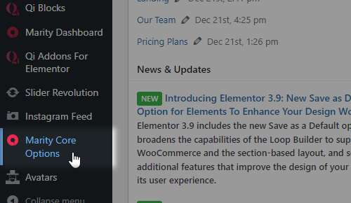
You should also see a notification at the top of the screen that required plugins need to be installed. Please install and activate all of the required plugins, since they are necessary for the theme to function properly.
Theme Activation and Registration
In order to activate your copy of Marity, you should input your purchase code and email address, and thus effectively register the theme. To do this, please navigate to Marity Dashboard > Marity Dashboard and input the required information there.
You can obtain your purchase code by following these steps:
- Log into your Envato Market account.
- Hover the mouse over your username at the top of the screen.
- Click ‘Downloads’ from the drop-down menu.`
- Click ‘License certificate & purchase code’ (available as PDF or text file).
Note that you are not required to separately register any of the plugins which came bundled with the theme.
You should also make sure to activate and register your copy of the theme before proceeding to the demo import process.
Importing Demo Content
With the Marity theme, you have the option to either start creating your site from scratch, or choosing to import one of the included demo sites to use as a starting point, and then modifying it to suit your needs. In this section we will explain how to do the latter.
Marity comes with a one-click import module. To import one of the included demo sites, please follow these steps:
- Login to your WordPress admin panel
-
Navigate to Marity Dashboard > Import
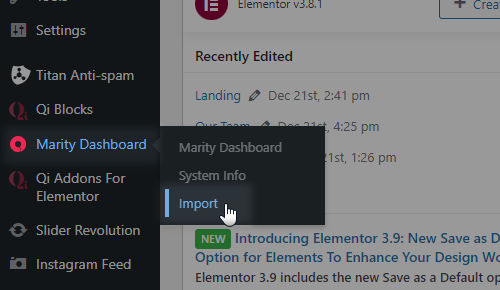
- From the Import dropdown menu, choose the demo site that you would like to import.
-
From the Import Type dropdown menu, choose what type of content you'd like to import:
- All - imports pages, content, widgets, and settings. We recommend this for users who would like to import a demo site exactly as it appears on our live demo.
- Content - imports only pages and their content. This option is recommended for users who would like to see how we've created our page layouts, but who want to keep their own settings in Marity Core Options.
- Widgets - imports only widgets. This option is recommended for users who would only like to populate the theme’s widget areas with the widgets from their chosen demo. No other content is imported.
- Options - imports settings in Marity Core Options only. This option is recommended for users who would like to achieve the same look and feel of their chosen demo site, but do not want to import any additional content.
- If you also wish to import media files (images, videos, sounds), make sure to set the Import attachments option to "Yes".
- Click on the Import button and wait for the import process to finish.
Updating Marity
You can update your theme by performing the following steps:
- Download the latest theme .zip file from ThemeForest
- Extract it and locate marity.zip
- Extract marity.zip and locate the marity folder
- Copy/Replace the contents of the marity folder to the /wp-content/themes/marity folder of your web site.
Troubleshooting FAQ
1. Why can't I save my menu?
WordPress by default has a limited number of menu items. When you import our demo content, which contains a lot of menu items, you might not be able to save changes you make to a menu. You can fix this problem by contacting your hosting and asking them to add the following lines to the php.ini file:
suhosin.post.max_vars = 5000 suhosin.request.max_vars = 5000
2. Why is there a smiley displayed on blank pages?
This problem is most likely related to JetPack and memory settings of your hosting. You can either disable JetPack or read what the JetPack developer wrote: Regarding the memory limit, please refer to the WordPress Codex section concerning this problem. Some sites that load many plugins alongside WordPress ultimately require a higher memory limit than WordPress defaults to, but since this is limited to specific hosts and configurations, it must be dealt with on an individual basis. You'll find the Codex article at: https://codex.wordpress.org/Common_WordPress_Errors#Allowed_memory_size_exhausted
3. How do I optimize my site?
Please use this tool to investigate reasons for slow loading: https://gtmetrix.com/
4. How to translate or rename default theme labels?
You can use the Poedit software (https://poedit.net/wordpress) to translate/rename all the theme's labels. Another solution is to edit the theme folder/languages/en_US.po file directly in a text editor and manually edit the labels you want to translate.
5. Why do I see a white screen when importing demo content?
If you get a white screen or some other error when trying to import our demo content, this probably happens because of the maximum execution time limit. You need to increase the maximum execution time (upload time) setting of your web server. The default maximum execution time on web servers is 30 seconds. Please increase it to 120 seconds. Possible ways of achieving this are:
- By Wp-config.php changes - set_time_limit(120);
- In htaccess - php_value max_execution_time 120;
- In php.ini file - max_execution_time = 120
You can also ask your hosting provider to take care of this for you.
2. Using Marity
Once you've installed Marity, you can start building your site. In this section of the User Guide we will explain how you can set up your header, upload your logo, create your menu, set up your footer area, customize the general look and feel of your website, and create your first pages.
Setting Up the Header
One of the first things you might want to do after you have installed and activated your Marity theme is to set up your header area. The header contains the logo, menu, search bar, side area icon, and other optional widgets.
To set up your header, navigate to Marity Core Options > Header from your WordPress admin panel. The settings you define here will be the default settings for all pages on your site. If you need any help in further understanding any of these options, please refer to the Marity Core Options section of this User Guide.
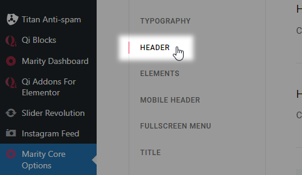
Some options, such as the header skin and background color, can be overridden on a page to page basis from a specific page’s backend. For more information on how local page settings work, please refer to the Pages section of this User Guide.
Uploading Your Logo
To add your logo to the header, navigate to Marity Core Options > Logo from your WordPress admin panel and click the upload button next to the Logo – Main field. After you upload your image and save the options, you should have a visible logo in your header area. For more information regarding the various logo types that can be uploaded, please refer to the Marity Core Options section of this User Guide.
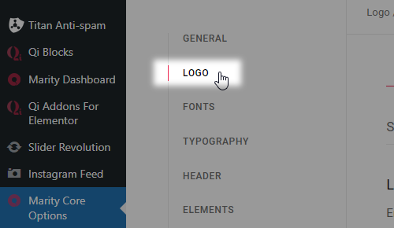
Menu Creation
To create a new menu, navigate to Appearance > Menus from your WordPress admin panel. Enter a name for your new menu and then click Create Menu.
 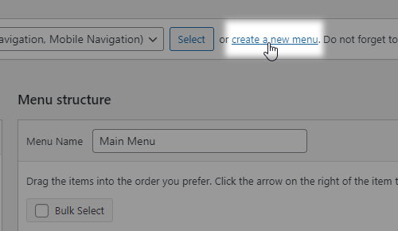
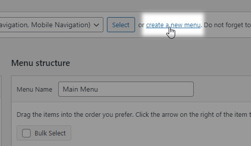
Every page that you have created will be listed in the section on the left named Pages. Simply check the pages that you would like to add to your menu and click the Add to Menu button. Once you have added pages to your menu, you can click and drag the menu items to rearrange them, or nest them one underneath the other.
In the Menu Settings section (which is located underneath the Menu Structure section), check the checkbox next to Main Navigation and click Save Menu. This will activate the menu you have just created, and you should now see a functional menu in your header.
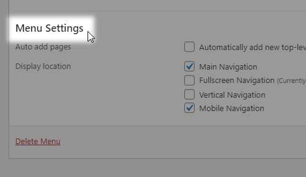
Footer
To set up your footer, navigate to Marity Core Options > Footer from your WordPress admin panel.
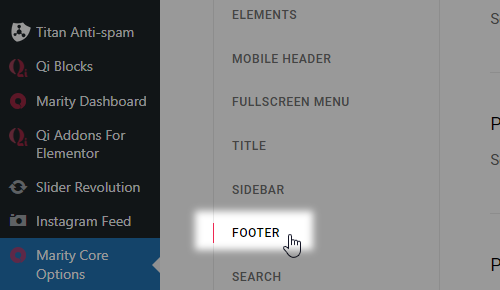
The settings you define here will be the default settings for all pages on your site. If you would like both the top and bottom footer areas to be displayed, make sure that both the Enable Footer Top Area and Enable Footer Bottom Area options are enabled. If you need any help understanding any of these options, please refer to the Marity Core Options section of this user guide.
Content is added to your footer via widgets. Navigate to Appearance > Widgets from your WordPress admin panel. On the right side of your page you will see the widget areas for your footer. The widget areas for the top footer are named Footer Top Area - Column 1, Footer Top Area - Column 2, Footer Top Area - Column 3, and Footer Top Area - Column 4. On the left side of the Widgets page you will see the available widgets. To add a widget to one of the Footer widget areas, simply drag the desired widget to one of the Footer Column widget areas on the right.

To add content to the bottom footer, simply add widgets to the Footer Bottom widget areas.
General Look and Feel
Now let’s set up the general look and feel of your site. If you have imported a demo site and would like to keep its general look and feel, then you do not need to do anything else. Otherwise, you can go to Marity Core Options > Typography and in the General Typography section set a default font family and styles for your site. Next, you can navigate to Marity Core Options > General, and in the Main Color field set a default main color for your site.
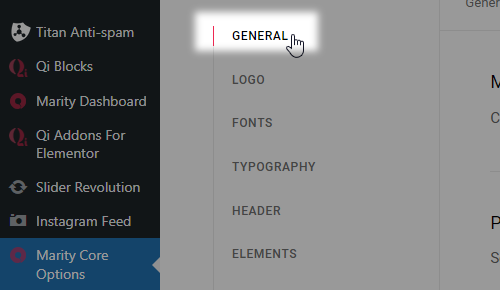
Now that you have set up the basic elements for your site, you’re ready to start building your pages.
Building Pages
To create a new page, navigate to Pages > Add New from your WordPress admin panel. In the text field near the top of the screen enter a title for your page. After you have added a title, choose the “Full width” template from the section on the right named Page Attributes. This will allow you to add sections to your page that span across the whole width of the screen.
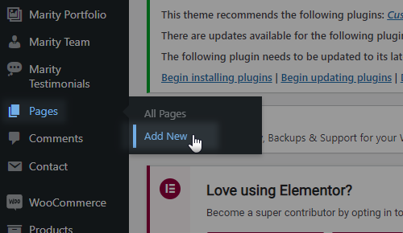
In the bottom section of your screen you will find local page settings. Any settings that you define here will override the global settings set in Marity Core Options.
To start adding elements to your page, first make sure that you are in the Elementor editor view. If the blue button near the top left of the page says EDIT WITH ELEMENTOR, click on it to enable the Elementor Page Builder view.
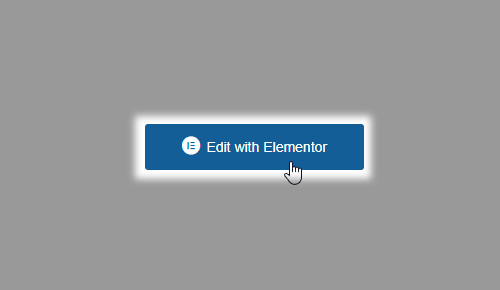
You can also type in the name of the desired element in the Search Widget... search field located at the top of the toolbar. Note that you can add the elements of your choosing by drag-and-dropping them on the page, which is displayed on the right side of the screen. You can learn more about individual elements in the Custom Shortcodes section of this user guide.
Finally, click the Publish button in the lower right section of the Elementor toolbar. (If you made some changes on an already published page, you will see an Update button instead).
3. Pages
In this section of the User Guide we will discuss page creation in more detail, including the various page templates available in the theme, and all the page specific options.
When creating a new page, one of the first things you will probably want to do is to choose an appropriate template for your page. To this this, visit your page from the backend (or create a new page by going to Pages > Add new), and locate the Page Attributes section on the right side of the screen. Marity comes with a variety of page templates to choose from:
- Default Template - Select this template if you would like to create a standard page with your content inside the grid.
- Select Blank Template - Choose this template to create a page with no header or footer.
- Select Full Width Template - Select this template if you would like to create a standard page with your content spanning across the full width of the page.
Now that you have chosen an appropriate template, let’s go over the custom fields available for pages.
Marity Settings
Page Settings
- Page Background Color - Set a color for the page background.
- Page Background Image - Set a background image for the page.
- Page Background Repeat - Set a background pattern for the page.
- Page Background Size - Choose whether you wish to resize the background image to cover the entire background (even if this means streaching or cutting the image), or if you wish to resize the background image to display it in its full size.
- Page Background Attachment - Choose whether the background image will be fixed or can be scrolled.
- Page Content Padding - Set the padding values for the content on this page. Please input the padding values in the format: top right bottom left (e.g. 10px 5px 10px 5px).
- Page Content Padding Mobile - Set the padding values for the content on this page on mobile screens (1024px and below). Please input the padding values in the format: top right bottom left (e.g. 10px 5px 10px 5px).
- Boxed Layout - Set this option to "Yes" to enable the boxed layout. If you choose a boxed layout for this page, the content will be fitted in a centrally positioned grid.
- Boxed Background Color - Set a background color for outside the boxed content.
- Passepartout - Set this option to "Yes" if you would like to display a passepartout border around this page.
- Passepartout Color - Set a color for the passepartout.
- Passepartout Background Image - Upload an image to be displayed in the passepartout background.
- Passepartout Size - Set a size for the passepartout.
- Passepartout Responsive Size - Set a size for the passepartout border when viewed on smaller screens.
- Initial Width of Content - Set a width for the grid on this page.
- Always Put Content Behind Header - Set this option to "Yes" if you would like the header to cover the top of the page content.
Footer Settings
- Enable Page Footer - Set this option to "Yes" to display the footer on this page.
Footer Area
- Uncovering Footer - Set this option to "Yes" if you would like to make the footer gradually appear on scroll.
- Enable Top Footer Area - Set this option to "Yes" if you would like to display the top footer area.
- Top Footer Area in Grid - Set this option to "Yes" if you would like the top footer area to be displayed in grid.
- Top Footer Area Styles - Set the background color, background image, top border color and top border width for the footer top.
- Enable Bottom Footer Area - Set this option to "Yes" if you would like to display the bottom footer area.
- Bottom Footer Area in Grid - Set this option to "Yes" if you would like the bottom footer area to be displayed in grid.
- Bottom Footer Area Styles - Set the background color, top border color and top border width for the footer bottom.
Header Settings
- Header Layout - Choose a header type to use on this page. Depending on the header type you choose, different options will be available.
- Header Skin - Here you can choose a header style to be applied to the header on this page. The "Light" header style displays white navigation text and the "Light" logo version, while the "Dark" header style displays black navigation text and the "Dark" logo version. If you wish to use the default colors and logo, leave this field empty.
- Show Header Widget Areas - Set this option to "Yes" if you wish to display the header widget areas on this page.
Main Menu
- Dropdown Position - Input a value for the dropdown menu height in pixels.
Scroll Appearance Section
- Header Scroll Appearance - Choose a scroll appearance/behavior for the header on this page.
Centered Header
- Header Height - Input a value for the header height.
- Header Background Color - Set a background color for the centered header.
- Header Border Color - Set a color for the header border.
- Header Border Width - Set a width for the header border.
- Header Border Style - Choose a style for the header border.
Glossy Header
- Header Height - Input a value for the header height.
Minimal Header
- Content in Grid - Set this option to "Yes" if you wish to set the minimal header content in grid.
- Header Height - Input a value for the header height.
- Header Side Padding - Set the side padding for the minimal header.
- Header Background Color - Set a background color for the minimal header.
- Header Border Color - Set a color for the header border.
- Header Border Width - Set a width for the header border.
- Header Border Style - Choose a style for the header border.
Standard Header
- Header Glossy - Set this option to "Yes" to make the standard header glossy.
- Content in Grid - Set this option to "Yes" if you wish to set the standard header content in grid.
- Header Height - Input a value for the header height.
- Header Side Padding - Set the side padding for the standard header.
- Header Background Color - Set a background color for the standard header.
- Header Border Color - Set a color for the header border.
- Header Border Width - Set a width for the header border.
- Header Border Style - Choose a style for the header border.
- Menu Position - Choose where you wish to position the menu within the standard header.
Vertical Over Content Header
Vertical Sliding Header
- Header Background Color - Set a background color for the standard header.
- Icon Source - Pick a source for the vertical sliding header opener icon.
Vertical Header
- Header Background Color - Set a background color for the vertical header.
Top Area
- Enable Top Area - Set this option to "Yes" if you wish to display the top area on this page.
- Top Area Options - Set the background color, top area height, and top area side padding for the top area on this page.
Logo Settings
Header Logo Options
- Logo Height - Set the logo height for this page.
- Logo - Main - Upload a default logo image to display in the header on this page.
- Logo - Dark - Upload a dark style logo to display in the header on this page.
- Logo - Light - Upload a light style logo to display in the header on this page.
- Logo - Sticky Height - Set a height for the sticky logo.
- Logo - Sticky - Set a sticky logo image to be displayed.
Mobile Header Logo Options
- Mobile Logo Height - Set the mobile logo height for this page.
- Mobile Logo - Main - Upload a default mobile logo image to display in the header on this page.
Mobile Header Settings
- Mobile Header Layout - Choose a mobile header layout for this page.
Sidebar Settings
- Sidebar Layout - Choose the desired layout for your sidebar. You can also disable the sidebar here by choosing "No Sidebar".
- Set Grid Gutter - Choose a predefined grid gutter size to set space between content and sidebar.
Title Settings
- Enable Page Title - Use this option to control whether you would like to display the title area on this page or not.
Title Area
- Title Layout - Chose a type of title area to use.
- Page Title in Grid - Set this option to "Yes" if you would like to set the title area content in grid.
- Height - Set a height for the title area.
- Height on Smaller Screens - Set a height for the title area on smaller screens when the mobile header is displayed.
- Background Color - Set a background color for the title area
- Background Image - Chose a background image for the title area.
- Background Image Behavior - Choose how you would like the background image to behave.
- Title Color - Choose a color for the title.
- Text Alignment - Set an alignment for the title area text.
- Vertical Text Alignment - Define the vertical alignment setting for the title area content on this page. You can choose to vertically align the title area content from the bottom of the header, or from the top of your browser window.
4. Blog
In this section of the User Guide we will discuss the creation of blog posts and all the available options for each post, setting up pages to display blog listings, as well as how to change the date format for your posts.
Blog Posts
To create a new blog post, go to Posts > Add New from your WordPress admin panel. First, you need to enter a title for your blog post in the text field near the top of the screen. Then choose a format for your blog post in the Format section on the right side of the screen.
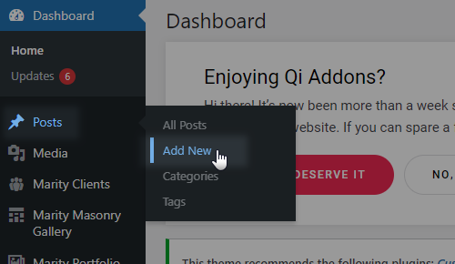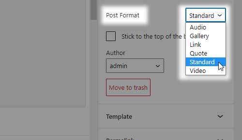
Let's take a look at the available blog post formats:
- Standard - This is the default blog format. You can start adding content with the Elementor Page Builder.
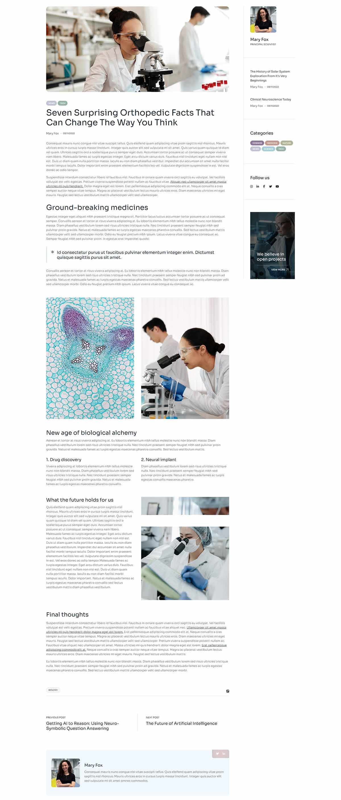
- Gallery - this format features an image gallery slider. In order for it to work, you need to add a gallery at the top of your page. A field named Post Format Gallery will appear in the blog single settings section of the page, and here you can upload and add your gallery images.
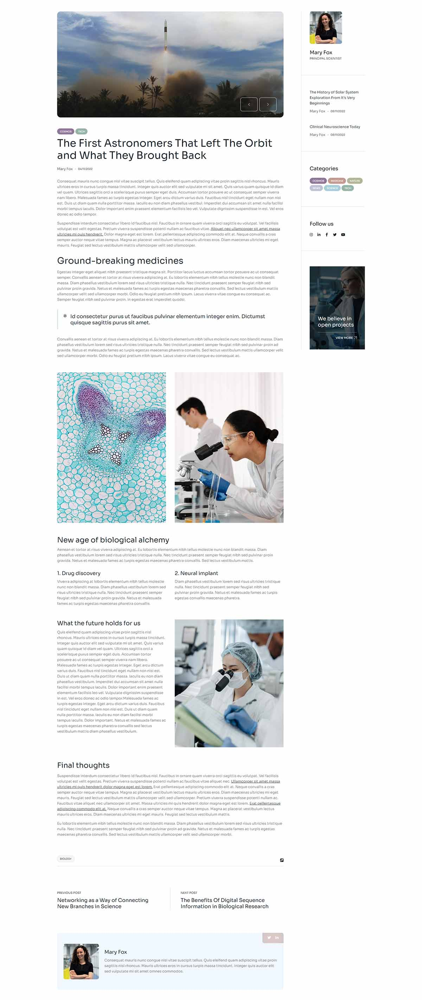
- Video - a field named Post Format Video will appear in the blog single settings section of the page. Here you can enter your video links. You can link videos from YouTube or Vimeo, or alternatively, host your own videos. If you decide to self-host your video files, you need to upload the video files via the Media section (or you could upload a video directly to your server), and then enter the path to your video files in the corresponding fields. We recommend uploading videos in MP4 format in order to ensure compatibility with all modern browsers. You can also find a list of all supported formats here.
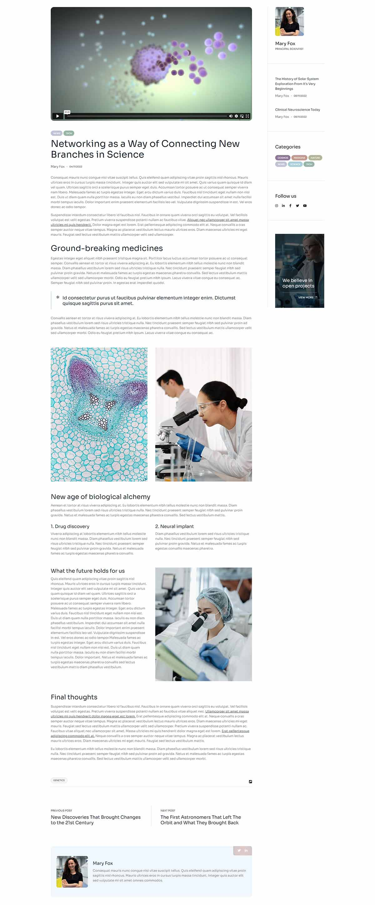
- Audio - a field named Post Format Audio will appear in the blog single settings section of the page. Here you can enter the path to an audio file you have previously uploaded to the Media Library (or to your server directly), or a link to an online audio service. You can find the full list of all supported online audio services here.
- Link - a field named Post Format Link will appear in the blog single settings section of the page. Here you can enter the full URL of the page you would like to link to, as well as a text you wish to display on the link.
- Quote - a field named Post Format Quote will appear in the blog single settings section of the page. Here you can enter the quote you would like to display as well as the author of the quote.
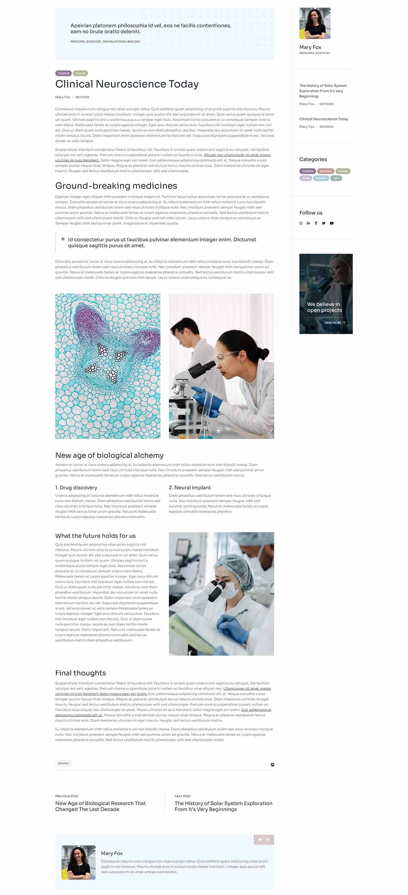
Now it's time to categorize this post:
- Beneath the Format section you will see a section named Categories. Here you can select the categories that you would like to add this post to. If you would like to create a new category, click on the + Add New Category link. A text field will appear in which you can enter a category name, and then click Add New Category.
- Once you've selected the categories you would like to add your post to, click the Publish button. Congratulations, you've just published your first blog post!
- Beneath the Categories section you will see the Tags and Featured Image sections. Here you can add tags to your post, and set a featured image which will be displayed for this post on blog list pages.
Now that we have published our first blog post, let’s go over the available custom fields for blog posts.
Blog Single
- Blog List Image - Set an image for this post to be displayed in blog lists instead of the featured image.
- Image Dimensions - Choose an image layout for blog lists. If you are using fixed images proportions in the list, pick an option other than default.
Marity Settings
Page Settings
- Page Background Color - Set a color for the page background.
- Page Background Image - Set a background image for the page.
- Page Background Repeat - Set a background pattern for the page.
- Page Background Size - Choose whether you wish to resize the background image to cover the entire background (even if this means streaching or cutting the image), or if you wish to resize the background image to display it in its full size.
- Page Background Attachment - Choose whether the background image will be fixed or can be scrolled.
- Page Content Padding - Set the padding values for the content on this page. Please input the padding values in the format: top right bottom left (e.g. 10px 5px 10px 5px).
- Page Content Padding Mobile - Set the padding values for the content on this page on mobile screens (1024px and below). Please input the padding values in the format: top right bottom left (e.g. 10px 5px 10px 5px).
- Boxed Layout - Set this option to "Yes" to enable the boxed layout. If you choose a boxed layout for this page, the content will be fitted in a centrally positioned grid.
- Boxed Background Color - Set a background color for outside the boxed content.
- Passepartout - Set this option to "Yes" if you would like to display a passepartout border around this page.
- Passepartout Color - Set a color for the passepartout.
- Passepartout Background Image - Upload an image to be displayed in the passepartout background.
- Passepartout Size - Set a size for the passepartout.
- Passepartout Responsive Size - Set a size for the passepartout border when viewed on smaller screens.
- Initial Width of Content - Set a width for the grid on this page.
- Always Put Content Behind Header - Set this option to "Yes" if you would like the header to cover the top of the page content.
Footer Settings
- Enable Page Footer - Set this option to "Yes" to display the footer on this page.
Footer Area
- Uncovering Footer - Set this option to "Yes" if you would like to make the footer gradually appear on scroll.
- Enable Top Footer Area - Set this option to "Yes" if you would like to display the top footer area.
- Top Footer Area in Grid - Set this option to "Yes" if you would like the top footer area to be displayed in grid.
- Top Footer Area Styles - Set the background color, background image, top border color and top border width for the footer top.
- Enable Bottom Footer Area - Set this option to "Yes" if you would like to display the bottom footer area.
- Bottom Footer Area in Grid - Set this option to "Yes" if you would like the bottom footer area to be displayed in grid.
- Bottom Footer Area Styles - Set the background color, top border color and top border width for the footer bottom.
Header Settings
- Header Layout - Choose a header type to use on this page. Depending on the header type you choose, different options will be available.
- Header Skin - Here you can choose a header style to be applied to the header on this page. The "Light" header style displays white navigation text and the "Light" logo version, while the "Dark" header style displays black navigation text and the "Dark" logo version. If you wish to use the default colors and logo, leave this field empty.
- Show Header Widget Areas - Set this option to "Yes" if you wish to display the header widget areas on this page.
Main Menu
- Dropdown Position - Input a value for the dropdown menu height in pixels.
Scroll Appearance Section
- Header Scroll Appearance - Choose a scroll appearance/behavior for the header on this page.
Centered Header
- Header Height - Input a value for the header height.
- Header Background Color - Set a background color for the centered header.
- Header Border Color - Set a color for the header border.
- Header Border Width - Set a width for the header border.
- Header Border Style - Choose a style for the header border.
Glossy Header
- Header Height - Input a value for the header height.
Minimal Header
- Content in Grid - Set this option to "Yes" if you wish to set the minimal header content in grid.
- Header Height - Input a value for the header height.
- Header Side Padding - Set the side padding for the minimal header.
- Header Background Color - Set a background color for the minimal header.
- Header Border Color - Set a color for the header border.
- Header Border Width - Set a width for the header border.
- Header Border Style - Choose a style for the header border.
Standard Header
- Header Glossy - Set this option to "Yes" to make the standard header glossy.
- Content in Grid - Set this option to "Yes" if you wish to set the standard header content in grid.
- Header Height - Input a value for the header height.
- Header Side Padding - Set the side padding for the standard header.
- Header Background Color - Set a background color for the standard header.
- Header Border Color - Set a color for the header border.
- Header Border Width - Set a width for the header border.
- Header Border Style - Choose a style for the header border.
- Menu Position - Choose where you wish to position the menu within the standard header.
Vertical Over Content Header
Vertical Sliding Header
- Header Background Color - Set a background color for the standard header.
- Icon Source - Pick a source for the vertical sliding header opener icon.
Vertical Header
- Header Background Color - Set a background color for the vertical header.
Top Area
- Enable Top Area - Set this option to "Yes" if you wish to display the top area on this page.
- Top Area Options - Set the background color, top area height, and top area side padding for the top area on this page.
Logo Settings
Header Logo Options
- Logo Height - Set the logo height for this page.
- Logo - Main - Upload a default logo image to display in the header on this page.
- Logo - Dark - Upload a dark style logo to display in the header on this page.
- Logo - Light - Upload a light style logo to display in the header on this page.
- Logo - Sticky Height - Set a height for the sticky logo.
- Logo - Sticky - Set a sticky logo image to be displayed.
Mobile Header Logo Options
- Mobile Logo Height - Set the mobile logo height for this page.
- Mobile Logo - Main - Upload a default mobile logo image to display in the header on this page.
Mobile Header Settings
- Mobile Header Layout - Choose a mobile header layout for this page.
Sidebar Settings
- Sidebar Layout - Choose the desired layout for your sidebar. You can also disable the sidebar here by choosing "No Sidebar".
- Set Grid Gutter - Choose a predefined grid gutter size to set space between content and sidebar.
Title Settings
- Enable Page Title - Use this option to control whether you would like to display the title area on this page or not.
Title Area
- Title Layout - Chose a type of title area to use.
- Page Title in Grid - Set this option to "Yes" if you would like to set the title area content in grid.
- Height - Set a height for the title area.
- Height on Smaller Screens - Set a height for the title area on smaller screens when the mobile header is displayed.
- Background Color - Set a background color for the title area
- Background Image - Chose a background image for the title area.
- Background Image Behavior - Choose how you would like the background image to behave.
- Title Color - Choose a color for the title.
- Text Alignment - Set an alignment for the title area text.
- Vertical Text Alignment - Define the vertical alignment setting for the title area content on this page. You can choose to vertically align the title area content from the bottom of the header, or from the top of your browser window.
Blog Lists
After you have created enough posts, you also need to create a blog list where all of these posts will be displayed. To create a blog list, you first need to create a new page on which your blog list will be displayed, and in the page's backend find the Blog List shortcode. You also have the option to create a blog slider using the Blog Slider shortcode. For a more detailed look into the Blog List as well as the Blog Slider elements, refer to the Custom Shortcodes section of this guide.
Date Format
If you wish to change the date format on blog posts, navigate to Settings > General > Date Format from your WordPress admin, and select your format of choice.
5. Portfolio
In this section of the User Guide we will discuss the creation of portfolio items, as well as how to add portfolio lists to your website pages.
Portfolio Items
To create a new portfolio item:
- Navigate to Marity Portfolio > Add new from your WordPress admin panel.
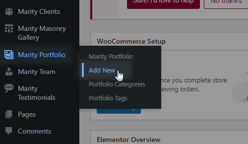
- Enter a title for your portfolio item in the text field near the top of the page.
- On the right side of the screen you will see a section named Portfolio Categories. Here you can select the categories that you would like to add this portfolio item to. If you would like to create a new category, click on the + Add New Category link. A text field will appear in which you can enter a category name, and then click Add New Category.
- Once you have checked the categories you would like to add your post to, click the Publish button.
Beneath the Portfolio Categories section are the Portfolio Tags, Attributes, and Featured Image sections. In the Portfolio Tags section, you can enter tags for this portfolio item. In the Attributes section, you can set the order in which you would like this portfolio item to appear in portfolio lists. In the Featured Image section, you can set an image to be displayed for this item on portfolio lists.
Now that you have set up your first portfolio item, let’s go over the available custom fields for portfolio items.
Portfolio Settings
General Settings
- Single Layout - Choose a layout for your portfolio single project. You can choose from the following portfolio types:
Gallery - Big
Gallery - Small
Images - Big
Images - Small
Masonry - Big
Masonry - Small
Slider
You can also choose the Portfolio Custom type, if you would like to build your portfolio from scratch via shortcodes, like you would any other page.
- Number of Columns - When using the "Gallery" and "Masonry" types of portfolio, you can choose a number of columns to display your images in.
- Space Between Items - When using the "Gallery" and "Masonry" types of portfolio, you can set a predefined spacing between images.
Media Settings
- Media Items - Here you can choose a Media Type you wish to use for each specific media item you wish to display, as well as to add the media itself. Available media types are Gallery, Image, Video and Audio.
Info Settings
- Info Items - Here you can add a label, some accompanying text, an item link, and choose whether said link would open in the same or a new browser window for each specific info item.
- Back To Link - Choose a 'back to' page link to link from this portfolio single page.
Page Settings
- Page Background Color - Set a color for the page background.
- Page Background Image - Set a background image for the page.
- Page Background Repeat - Set a background pattern for the page.
- Page Background Size - Choose whether you wish to resize the background image to cover the entire background (even if this means streaching or cutting the image), or if you wish to resize the background image to display it in its full size.
- Page Background Attachment - Choose whether the background image will be fixed or can be scrolled.
- Page Content Padding - Set the padding values for the content on this page. Please input the padding values in the format: top right bottom left (e.g. 10px 5px 10px 5px).
- Page Content Padding Mobile - Set the padding values for the content on this page on mobile screens (1024px and below). Please input the padding values in the format: top right bottom left (e.g. 10px 5px 10px 5px).
- Boxed Layout - Set this option to "Yes" to enable the boxed layout. If you choose a boxed layout for this page, the content will be fitted in a centrally positioned grid.
- Boxed Background Color - Set a background color for outside the boxed content.
- Passepartout - Set this option to "Yes" if you would like to display a passepartout border around this page.
- Passepartout Color - Set a color for the passepartout.
- Passepartout Background Image - Upload an image to be displayed in the passepartout background.
- Passepartout Size - Set a size for the passepartout.
- Passepartout Responsive Size - Set a size for the passepartout border when viewed on smaller screens.
- Initial Width of Content - Set a width for the grid on this page.
- Always Put Content Behind Header - Set this option to "Yes" if you would like the header to cover the top of the page content.
Footer Settings
- Enable Page Footer - Set this option to "Yes" to display the footer on this page.
Footer Area
- Uncovering Footer - Set this option to "Yes" if you would like to make the footer gradually appear on scroll.
- Enable Top Footer Area - Set this option to "Yes" if you would like to display the top footer area.
- Top Footer Area in Grid - Set this option to "Yes" if you would like the top footer area to be displayed in grid.
- Top Footer Area Styles - Set the background color, background image, top border color and top border width for the footer top.
- Enable Bottom Footer Area - Set this option to "Yes" if you would like to display the bottom footer area.
- Bottom Footer Area in Grid - Set this option to "Yes" if you would like the bottom footer area to be displayed in grid.
- Bottom Footer Area Styles - Set the background color, top border color and top border width for the footer bottom.
Header Settings
- Header Layout - Choose a header type to use on this page. Depending on the header type you choose, different options will be available.
- Header Skin - Here you can choose a header style to be applied to the header on this page. The "Light" header style displays white navigation text and the "Light" logo version, while the "Dark" header style displays black navigation text and the "Dark" logo version. If you wish to use the default colors and logo, leave this field empty.
- Show Header Widget Areas - Set this option to "Yes" if you wish to display the header widget areas on this page.
Main Menu
- Dropdown Position - Input a value for the dropdown menu height in pixels.
Scroll Appearance Section
- Header Scroll Appearance - Choose a scroll appearance/behavior for the header on this page.
Centered Header
- Header Height - Input a value for the header height.
- Header Background Color - Set a background color for the centered header.
- Header Border Color - Set a color for the header border.
- Header Border Width - Set a width for the header border.
- Header Border Style - Choose a style for the header border.
Glossy Header
- Header Height - Input a value for the header height.
Minimal Header
- Content in Grid - Set this option to "Yes" if you wish to set the minimal header content in grid.
- Header Height - Input a value for the header height.
- Header Side Padding - Set the side padding for the minimal header.
- Header Background Color - Set a background color for the minimal header.
- Header Border Color - Set a color for the header border.
- Header Border Width - Set a width for the header border.
- Header Border Style - Choose a style for the header border.
Standard Header
- Header Glossy - Set this option to "Yes" to make the standard header glossy.
- Content in Grid - Set this option to "Yes" if you wish to set the standard header content in grid.
- Header Height - Input a value for the header height.
- Header Side Padding - Set the side padding for the standard header.
- Header Background Color - Set a background color for the standard header.
- Header Border Color - Set a color for the header border.
- Header Border Width - Set a width for the header border.
- Header Border Style - Choose a style for the header border.
- Menu Position - Choose where you wish to position the menu within the standard header.
Vertical Over Content Header
Vertical Sliding Header
- Header Background Color - Set a background color for the standard header.
- Icon Source - Pick a source for the vertical sliding header opener icon.
Vertical Header
- Header Background Color - Set a background color for the vertical header.
Top Area
- Enable Top Area - Set this option to "Yes" if you wish to display the top area on this page.
- Top Area Options - Set the background color, top area height, and top area side padding for the top area on this page.
Logo Settings
Header Logo Options
- Logo Height - Set the logo height for this page.
- Logo - Main - Upload a default logo image to display in the header on this page.
- Logo - Dark - Upload a dark style logo to display in the header on this page.
- Logo - Light - Upload a light style logo to display in the header on this page.
- Logo - Sticky Height - Set a height for the sticky logo.
- Logo - Sticky - Set a sticky logo image to be displayed.
Mobile Header Logo Options
- Mobile Logo Height - Set the mobile logo height for this page.
- Mobile Logo - Main - Upload a default mobile logo image to display in the header on this page.
Mobile Header Settings
- Mobile Header Layout - Choose a mobile header layout for this page.
List Settings
- Portfolio List Image - Set an image to be displayed in portfolio lists instead of the featured image for this portfolio single project.
- Image Dimension - Set an image layout to be used for this portfolio item when the item behaviour in the portfolio list element is set to "masonry". If you are using fixed image proportions on the list, choose an option other than default.
- Portfolio Item Custom Padding - Input custom padding values for this portfolio item when it appears in portfolio lists.
Sidebar Settings
- Sidebar Layout - Choose the desired layout for your sidebar. You can also disable the sidebar here by choosing "No Sidebar".
- Set Grid Gutter - Choose a predefined grid gutter size to set space between content and sidebar.
Title Settings
- Enable Page Title - Use this option to control whether you would like to display the title area on this page or not.
Title Area
- Title Layout - Chose a type of title area to use.
- Page Title in Grid - Set this option to "Yes" if you would like to set the title area content in grid.
- Height - Set a height for the title area.
- Height on Smaller Screens - Set a height for the title area on smaller screens when the mobile header is displayed.
- Background Color - Set a background color for the title area
- Background Image - Chose a background image for the title area.
- Background Image Behavior - Choose how you would like the background image to behave.
- Title Color - Choose a color for the title.
- Text Alignment - Set an alignment for the title area text.
- Vertical Text Alignment - Define the vertical alignment setting for the title area content on this page. You can choose to vertically align the title area content from the bottom of the header, or from the top of your browser window.
Portfolio Lists
A portfolio list displays a listing of your portfolio items, each of which can be clicked on for a detailed overview of the single portfolio item.
A portfolio list is added to pages via the Portfolio List shortcode. To add a portfolio list to a page, navigate to the backend of that page and add the Portfolio List element to the page via Elementor Page Builder (by entering the Elementor Page Builder view, and then dragging the Portfolio List element from the element selection screen).. For a comprehensive overview of all the options provided in the Portfolio List element, please see the Custom Shortcodes section of this User Guide.
6. Menus
In this section of the User Guide we will discuss menus and menu creation, as well as the creation of anchor links for One Page site functionality.
Menu Creation
To create a menu, navigate to Appearance > Menus from your WordPress admin panel.
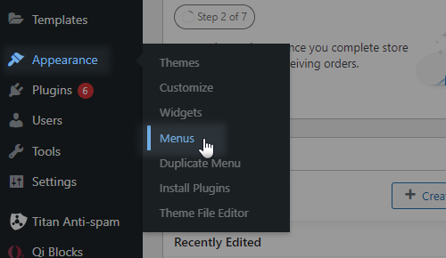
In the upper left corner of your screen you will see two tabs: Edit Menus and Manage Locations.
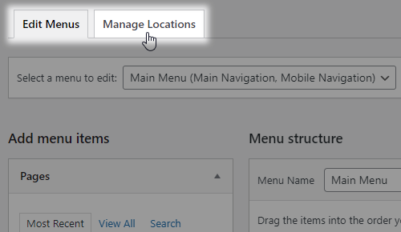
In the Manage Locations tab you can assign menus to several different locations: Main Navigation, Fullscreen Navigation, Vertical Navigation, and Mobile Navigation, depending on which header type you are using.
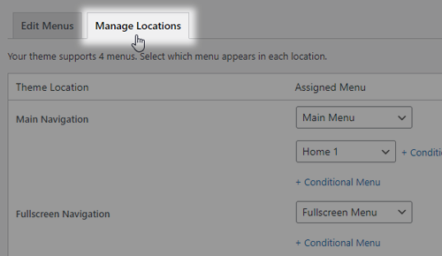
You can also assign the current menu to a location in the Edit Menus tab, by scrolling down to the Menu Settings section.

You can edit your menus in the Edit Menus tab. When editing menus, you can click on the small triangle icon on each menu item to open a list of editable settings:
- Navigation Label – You can enter a navigation label for this menu item. This is the text that will appear on your menu. By default, the navigation label is set to the title of the page.
- Enable Mega Menu - Tick this checkbox if you wish to enable a mega menu.
- Menu Item Appearance - Here you can adjust the appearance of menu items. Choose Hide Link if you don't want the menu item to be a clickable link, and pick Hide Item if you want to hide this menu item from your menu. The Hide Item option is useful when creating a wide menu in which you need to set a 2nd level menu item to hold your 3rd level menu items, but you don’t want the 2nd level menu item to be displayed in the menu.
- Icon Pack - Choose the icon pack you would like to use for your menu icons. Icons are displayed in the default and "wide with icons" menu types, but not in the "wide" menu type.
- Icon – You can use this field to set an icon to appear next to this menu item.
7. Marity Core Options
This section of the User Guide provides a comprehenisve overview of all the settings available in the Marity Core Options section of your WordPress admin panel. The settings found here are applied globally and will affect all pages on your website. However, note that many of these options can be overridden locally by applying settings on individual pages or on shortcode elements.
General
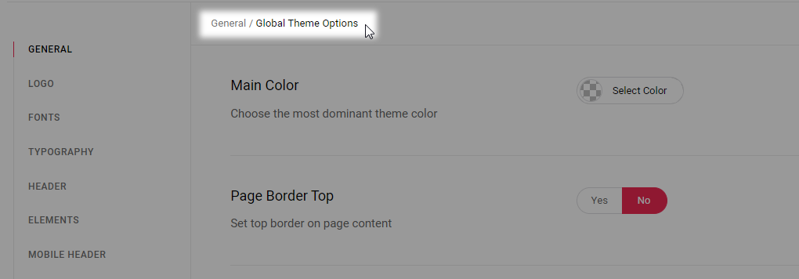
- Main Color - Set a first main color for your website.
- Page Background Color - Set a background color for your pages.
- Page Background Image - Upload the image for the background.
- Page Background Repeat - Enabling this option will set the background image as a repeating pattern throughout the page, otherwise the image will appear as the cover background image.
- Page Background Attachment - Choose whether the background image will be fixed or can be scrolled.
- Page Content Padding - Set the padding values for the content for your pages. Please input the padding values in the format: top right bottom left (e.g. 10px 5px 10px 5px).
- Page Content Padding Mobile - Set the padding values for the content on your pages on mobile screens (1024px and below). Please input the padding values in the format: top right bottom left (e.g. 10px 5px 10px 5px).
- Boxed Layout - Set this option to "Yes" to enable the boxed layout. If you choose a boxed layout for your pages, the content will be fitted in a centrally positioned grid.
- Boxed Background Color - Set a background color for outside the boxed content.
- Boxed Background Pattern - Set an image pattern to be displayed in the boxed background.
- Boxed Background Pattern Behavior - Choose a behavior type for the boxed background.
- Passepartout - Set this option to "Yes" if you would like to display a passepartout border around your pages.
- Passepartout Color - Set a color for the passepartout.
- Passepartout Background Image - Upload an image to be displayed in the passepartout background.
- Passepartout Size - Set a size for the passepartout.
- Passepartout Responsive Size - Set a size for the passepartout border when viewed on smaller screens.
- Initial Width of Content - Set a width for the grid on your pages.
- Custom JS - You can input any custom JavaScript into this field and it will take effect on your site.
- Enable Back to Top - Set this option to "Yes" to display a 'Back to Top' button on your website.
Logo
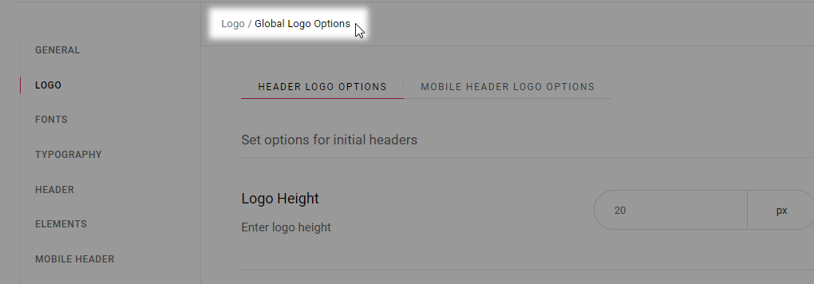
Header Logo Options
- Logo Height - Set the logo height for your pages.
- Logo - Main - Upload a default logo image to display in the header on your pages.
- Logo - Dark - Upload a dark style logo to display in the header on your pages.
- Logo - Light - Upload a light style logo to display in the header on your pages.
- Logo - Sticky Height - Set a height for the sticky logo.
- Logo - Sticky - Set a sticky logo image to be displayed.
Mobile Header Logo Options
- Mobile Logo Height - Set the mobile logo height for your pages.
- Mobile Logo - Main - Upload a default mobile logo image to display in the header on your pages.
Fonts
- Enable Google Fonts - Set this option to "Yes" if you wish to use Google Fonts on your website.
- Google Fonts to Include - Here you can choose which Google Fonts you wish to include on your site.
- Google Fonts Weight - Set default Google Fonts weights for your site. The more options you select, the greater potential impact on page load time gets.
- Google Fonts Styles - Choose default Google Fonts styles for your site. The more options you select, the greater potential impact on page load time gets.
- Custom Fonts - If you wish to add custom fonts to your theme, you can do so here.
Typography
- General Typography - Here you can set the typography styles for different headings, links and paragraphs. In addition to this, you can set typography styles for individual responsive stages for each heading below.
Header
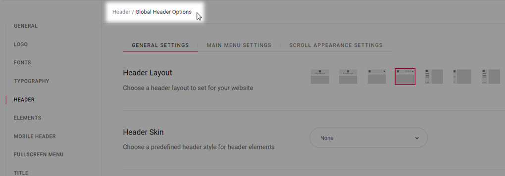
General
- Header Layout - Choose a header type to use on your pages. Depending on the header type you choose, different options will be available.
- Header Skin - Here you can choose a header style to be applied to the header on your pages. The "Light" header style displays white navigation text and the "Light" logo version, while the "Dark" header style displays black navigation text and the "Dark" logo version. If you wish to use the default colors and logo, leave this field empty.
Centered Header
- Header Height - Input a value for the header height.
- Header Background Color - Set a background color for the centered header.
- Header Border Color - Set a color for the header border.
- Header Border Width - Set a width for the header border.
- Header Border Style - Choose a style for the header border.
Glossy Header
- Header Height - Input a value for the header height.
Minimal Header
- Content in Grid - Set this option to "Yes" if you wish to set the minimal header content in grid.
- Header Height - Input a value for the header height.
- Header Side Padding - Set the side padding for the minimal header.
- Header Background Color - Set a background color for the minimal header.
- Header Border Color - Set a color for the header border.
- Header Border Width - Set a width for the header border.
- Header Border Style - Choose a style for the header border.
Standard Header
- Header Glossy - Set this option to "Yes" to make the standard header glossy.
- Content in Grid - Set this option to "Yes" if you wish to set the standard header content in grid.
- Header Height - Input a value for the header height.
- Header Side Padding - Set the side padding for the standard header.
- Header Background Color - Set a background color for the standard header.
- Header Border Color - Set a color for the header border.
- Header Border Width - Set a width for the header border.
- Header Border Style - Choose a style for the header border.
- Menu Position - Choose where you wish to position the menu within the standard header.
Vertical Over Content Header
Vertical Sliding Header
- Header Background Color - Set a background color for the standard header.
- Icon Source - Pick a source for the vertical sliding header opener icon.
Vertical Header
- Header Background Color - Set a background color for the vertical header.
Top Area
- Enable Top Area - Set this option to "Yes" if you wish to display the top area.
- Top Area Options - Set the background color, top area height, and top area side padding for the top area.
Main Menu Settings
Main Menu
- Dropdown Position - Input a value for the dropdown menu height in pixels.
- Wide Dropdown Full Width Section - Set this option to "Yes" if you wish to set the main menu to take up the full width.
- Wide Dropdown Content in Grid - Set this option to "Yes" if you would like the wide dropdown menu content to be in grid.
- Main Dropdown Menu Appearance - Choose how the dropdown menu will appear.
Main Menu Typography
- Menu 1st Level Typography - Set styles for 1st level menu items in the main menu.
- Menu 2nd Level Typography - Set styles for 2nd level menu items in the main menu.
- Menu 2nd Level Wide Typography - Set styles for the 2nd level menu items in the wide menu.
- Menu 3rd Level Wide Typography - Set styles for 3rd level menu items in the wide menu.
Scroll Appearance Settings
- Header Scroll Appearance - Choose a scroll appearance/behavior for the header on your pages.
- Sticky Scroll Amount - Enter a scroll amount (how much you will scroll from the top of the page) for the sticky header to appear at. This option is only available for the sticky header scroll appearance.
- Sticky Header Side Padding - Input a value for the sticky header side padding.
- Sticky Header Background Color - Set a color for the sticky header background.
Mobile Header
General Settings
- Sticky Mobile Header - Set this option to "Yes" if you wish the mobile header to be sticky (to follow in the viewport on scroll).
- Mobile Header Layout - Choose mobile header layout you wish to use.
Minimal Mobile Header
- Minimal Height - Set a minimal height for the minimal mobile header.
- Header Background Color - Set a background color for the minimal mobile header.
Standard Mobile Header
- Minimal Height - Set a minimal height for the standard mobile header.
- Header Background Color - Set a background color for the standard mobile header.
Mobile Menu Settings
Mobile Menu Typography
- Menu 1st Level Typography - Set styles for 1st level menu items in the mobile menu.
- Menu 2nd Level Typography - Set styles for 2nd level menu items in the mobile menu.
Fullscreen Menu
- Fullscreen Menu in Grid - Set this option to "Yes" if you wish to set the fullscreen menu in grid.
- Icon Source - Choose whether you would like to use icons from an icon pack, SVG icons or predefined, theme-styled icons.
- Icon Pack - Choose an icon pack for the full screen menu. This option is only available if you have selected icon pack as your source.
- Full Screen Menu Open Icon SVG Path - Enter the full screen menu icon SVG path here. This option is only available if you have selected the SVG icons as your source.
- Full Screen Menu Close Icon SVG Path - Enter the full screen menu close icon SVG path here. This option is only available if you have selected the SVG icons as your source.
Fullscreen Menu Typography
- Menu 1st Level Typography - Set styles for 1st level menu items in the fullscreen menu.
- Menu 2nd Level Typography - Set styles for 2nd level menu items in the fullscreen menu.
Title
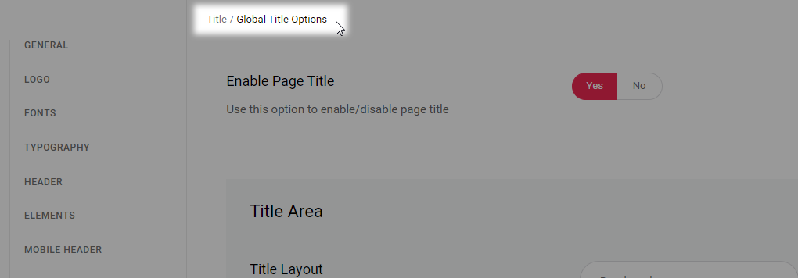
- Enable Page Title - Use this option to control whether you would like to display the title area or not on your website.
- Title Layout - Choose a type of title area to use.
- Page Title in Grid - Set this option to "Yes" if you would like to set the title area content in grid.
- Height - Set a height for the title area.
- Height on Smaller Screens - Set a height for the title area on smaller screens when the mobile header is displayed.
- Background Color - Set a background color for the title area
- Background Image - Chose a background image for the title area.
- Background Image Behavior - Choose how you would like the background image to behave.
- Title Color - Set a color for the title.
- Title Tag - Set a heading tag for titles.
- Text Alignment - Set an alignment for titles.
- Vertical Text Alignment - Define the vertical alignment setting for the title area content on your pages. You can choose to vertically align the title area content from the bottom of the header, or from the top of your browser window.
Sidebar
- Sidebar Layout - Choose a layout for the sidebar on pages.
- Set Grid Gutter - Choose a predefined size for the space between the content and sidebar.
Footer
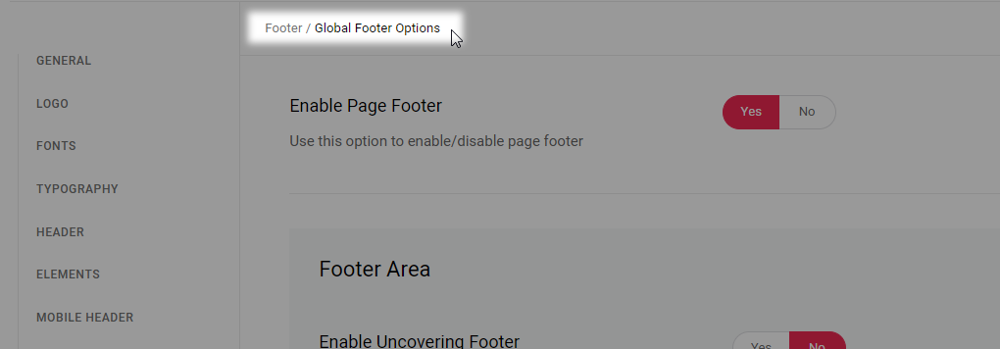
- Enable Page Footer - Set this option to "Yes" to display the footer on your pages.
Footer Area
- Uncovering Footer - Set this option to "Yes" if you would like to make the footer gradually appear on scroll.
- Enable Top Footer Area - Set this option to "Yes" if you would like to display the top footer area.
- Top Footer Area in Grid - Set this option to "Yes" if you would like the top footer area to be displayed in grid.
- Top Area Grid Gutter - Choose a predefined size for the space between columns for top footer area.
- Top Footer Area Styles - Set the background color, background image, top border color and top border width for the footer top.
- Enable Bottom Footer Area - Set this option to "Yes" if you would like to display the bottom footer area.
- Bottom Footer Area in Grid - Set this option to "Yes" if you would like the bottom footer area to be displayed in grid.
- Bottom Footer Area Columns - Set the number of columns for the bottom footer area.
- Bottom Area Grid Gutter - Choose a predefined size for the space between columns for bottom footer area.
- Bottom Footer Area Styles - Set the background color, top border color and top border width for the footer bottom.
Search
Search Page
- Enable Page Title - Set this option to "Yes" if you wish to display the search page title.
- Sidebar Layout - Choose a layout for the sidebar on search pages.
- Set Grid Gutter - Set a predefined size for the space between the content and sidebar on search pages.
- Number of Characters in Excerpt - Input the maximum number of characters you wish to show in post excerpts on search pages.
- Icon Source - Choose whether you would like to use icons from an icon pack or SVG icons, or a predefined icon style.
- Search Open Icon SVG Path - Input your search icon SVG path. This option is only available if you have selected SVG path as your search icon source.
- Search Close Icon SVG Path - Input the search close icon SVG path here. This option is only available if you have selected SVG path as your search icon source.
- Icon Pack - Choose an icon pack to use for search icons. This option is only available if you have selected Icon Pack as your search icon source.
- Search Icon Size - Set a size for the search icon.
- Search Icon - Here you can set a color for the search icon as well as for search icon on hover.
- Search Icon Label - Set this option to "Yes" if you would like to display the search icon label.
Side Area
- Side Area Width - Set a width for the side area.
- Content Overlay Background Color - Set a background color for the content overlay.
- Background Color - Set a background color for the side area.
- Icon Source - Choose whether you would like to use icons from an icon pack,SVG icons or a predefined icon style.
- Icon Pack - Choose an icon pack you wish to use for side area icon.
- Side Area Icon SVG Path - Enter your Side Area icon SVG path here.
- Side Area Close Icon SVG Path - Enter your Side Area close icon SVG path here.
- Colors - Here you can set the colors for the side area.
- Text Alignment - Choose an alignment for the text in the side area.
Blog
Blog List
- Number of Characters in Excerpt - Set a number of characters to be displayed in the excerpt.
- Sidebar Layout - Choose a sidebar layout for blog archive pages.
- Set Grid Gutter - Set a predefined size for the space between the content layout and the sidebar layout for your blog lists.
Blog Single
- Enable Page Title - Set this option to "Yes" to display the post title in single post title areas.
- Show Post Title in Title Area - Set this option to "Yes" to display the post title in title areas.
- Sidebar Layout - Choose a sidebar layout for blog single posts.
- Set Grid Gutter - Set a predefined size for the space between the content layout and the sidebar layout for your single posts.
- Enable Author Info - Set this option to "Yes" to display the author info box on blog single posts.
- Show Author Email - Set this option to "Yes" to show the author e-mail in the author info box.
- Enable Related Posts - Set this option to "Yes" to display related posts on blog single pages.
- Enable Single Post Navigation - Enable navigation links on single posts, so you can navigate through single blog posts.
- Set Navigation Through Current Category - Set this option to "Yes" to limit the navigation only to the current category.
Social Share
- Enable Facebook Share - Set this option to "Yes" to enable the Facebook social share functionality.
- Enable Twitter Share - Set this option to "Yes" to enable the Twitter social share functionality.
- Twitter Via Text - Input a twitter handle you wish to appear in Tweets shared from your site.
- Enable LinkedIn Share - Set this option to "Yes" to enable the LinkedIn social share functionality.
- Enable Pinterest Share - Set this option to "Yes" to enable the Pinterest social share functionality.
- Enable Tumblr Share - Set this option to "Yes" to enable the Tumblr social share functionality.
- Enable VK Share - Set this option to "Yes" to enable the VK social share functionality.
Maps
- Maps API Key - Input a Google Maps API key you wish to use.
- Map Style - If you would like to use a predefined map style, input the map style json here.
- Map Zoom - Input the default value for zoom on your maps.
- Enable Map Scroll - Set this option to "Yes" if you would like maps to be scrollable.
- Enable Map Dragging - Set this option to "Yes" if you would like maps to be draggable.
- Enable Map Street View Controls - Set this option to "Yes" if you would like to enable street view controls on maps.
- Enable Map Zoom Control - Set this option to "Yes" if you would like to enable zoom controls on maps.
- Enable Map Type Control - Set this option to "Yes" if you would like to allow users to choose the type of map they are viewing.
- Enable Map Full Screen Control - Set this option to "Yes" to display a full screen switch button on your maps.
Portfolio
Portfolio List
- Item Layout - Choose a style (layout and hover type) for single projects on portfolio archive pages.
- List Appearance - Choose an appearance style for portfolio lists.
- Masonry Image Proportions - Set the image proportion for masonry lists. This option is only available if you have selected the 'masonry' list appearance.
- Number of Columns - Choose a number of columns in which to display your portfolio items on archive pages.
- Space Between Items - Choose a spacing between items on portfolio archive pages.
- Columns Responsive - Here you can choose between 'predefined' column responsive, or you can adjust the number of columns manually for each responsive stage.
- Enable Slider Loop - If you would like the slider to loop when it comes to the end of the portfolio list, set this option to "Yes". This option is only available if you have selected the 'slider' list appearance.
- Enable Slider Autoplay - Set this option to "Yes" if you would like the slider to automatically change slides. This option is only available if you have selected the 'slider' list appearance.
- Slide Speed - Set a duration time (in milliseconds) for each slide to stay on screen before switching to the next slide. This option is only available if you have selected the 'slider' list appearance.
- Enable Slider Navigation - Set this option to "Yes" to enable slider navigation arrows. This option is only available if you have selected the 'slider' list appearance.
- Enable Slider Pagination - Set this option to "Yes" to enable pagination bullets on the slider. This option is only available if you have selected the 'slider' list appearance.
- Sidebar Layout - Choose a default sidebar layout for portfolio archives.
- Set Grid Gutter - Set a predefined size for the space between the content layout and the sidebar.
Portfolio Single
- Single Layout - Choose a default type for portfolio single pages.
- Sidebar Layout - Choose a default sidebar layout for portfolio single pages.
- Set Grid Gutter - Set a predefined size for the space between the content layout and the sidebar.
- Enable Title on Portfolio Single - Set this option to "Yes" if you would like to display project titles on portfolio single pages.
- Portfolio Title in Grid - Set this option to "Yes" if you wish to set portfolio titles in grid on portfolio single pages.
- Related Posts - Set this option to "Yes" to display the related posts section beneath the content on portfolio single pages.
- Navigation - Set this option to "Yes" if you wish to enable project navigation on portfolio singles.
- Navigation Through Same Category - Set this option to "Yes" to make portfolio navigation sort through current category only.
WooCommerce
Product List
- Item Layout - Choose a default layout for product lists.
- Columns Number - Choose a number of columns for the product list.
- Space Between Items - Set a spacing between products in the list.
- Products per Page - Set the number of products you would like to display per page.
- Title Tag - Set a heading tag for your product titles on product list pages.
- Sidebar Layout - Choose a default sidebar layout for product lists.
- Set Grid Gutter - Set a predefined size for the space between the content layout and the sidebar.
- Enable Percent Sign - Set this option to "Yes" if you wish to display the percent value mark instead of the sale label on selected products.
Product Single
- Enable Page Title - Set this option to "Yes" if you would like to display the title area on single product pages.
- Title Tag - Set a heading tag for your single product titles.
- Enable Image Lightbox - If you'd like to use lightbox image functionality, you can choose between 'magnific popup' and 'photo swipe' here, or you can choose not to use the image lightbox alltogether.
- Enable Zoom Maginfier - Set this option to "Yes" if you would like to enable a zoomed view of product images when they are hovered on.
- Set Thumbnail Images Position - Choose a position for the thumbnail images.
- Number of Thumbnail Image Columns - Set a number of columns for thumbnail images on single product pages.
- Number of Related Product Columns - Set a number of columns for related products on single product pages.
Working Hours
- Working Hours Mon/Sun - Here you can input the working hours for each individual day from monday through sunday.
- Special Days - Tick the boxes next to days you wish to mark as special days.
- Featured Text for Special Days - Input some text you wish to display for special days.
404
- Enable Page Title - Set this option to "Yes" to display a title on your 404 page.
- Enable Page Footer - Set this option to "Yes" to display a footer on your 404 page.
- Background Color - Set a background color for the 404 page.
- Background Image - Upload a background image for the 404 page.
- Title Label - Enter a title to be displayed on the 404 error page.
- Title Color - Set a color for the 404 page title.
- Text Label - Input a text to be displayed underneath the title for the 404 page.
- Text Color - Set a color for the 404 page additional text.
- Button Text - Input a text you wish to display on the 404 error page button.
8. Custom Shortcodes
In this section of the User Guide we will take a comprehesive look at all the custom shortcodes included in the theme and their repsective options.
Section
The section element is a container element in which you can add other elements (shortcodes) and sort them on your page. Besides the standard Elementor Page Builder options for sections (you can access these options by hovering on a section and clicking the Edit Section button), you also have the custom options which we included with the theme. You can access these options by clicking the Edit Section button on the section of your choice, and then navigating to the Advanced tab located in the Elementor toolbar on the left side of the page.
Marity Core Parallax
-
Enable Parallax - Set this option to "Yes" to enable an animated parallax effect for this section.
- Parallax Background Image - Set an image to be displayed in the background.
- Parallax Smoothness - Input a value for the parallax effect smoothness.
- Parallax Min Offset - Input a value for the minimum parallax offset.
- Parallax Max Offset - Input a value for the maximum parallax offset.
- Parallax Auto Scale Image - Set this option to "Yes" if you wish to scale parallax images automatically.
Marity Offset Image
-
Enable Offset Image - Set this option to "Yes" to display an offset image in this section.
- Offset Image - Add the image you wish to display.
- Enable Offset Parallax - Set this option to "Yes" to enable an animated parallax effect to the image.
- Offset Image Vertical Anchor - Choose a vertical anchor for the offset image.
- Offset Image Vertical Position - Set a vertical position for the offset image.
- Offset Image Horizontal Anchor - Choose a horizontal anchor for the offset image.
- Offset Image Horizontal Position - Set a horizontal position for the offset image.
Marity Grid
-
Make this row "In Grid" - Set this option to "Yes" to set this set this section in a grid layout.
- Grid Row Behavior - Choose a behavior type for the grid row.
- Grid Row Behavior Disable Below - Choose a resolution below which you wish to disable the selected grid row behavior.
Portfolio List
The portfolio list shortcode enables you to present a listing of your portfolios on a page.
General
- Custom Class - If you wish to style a particular content element differently, you can use this field to add an extra class name to that element and then refer to that class name in your css file.
- List Appearance - Choose a template for your portfolio list. The template you choose will define how your portfolio list will display.
-
Image Proportions - Choose the proportions of the images in your portfolio list.
- Custom Image Width - Input a value for the custom image width in pixels. This option is only available if you have selected the Custom image proportion option.
- Custom Image Height - Input a value for the custom image height in pixels. This option is only available if you have selected the Custom image proportion option.
- Number of Columns - Set the number of columns in which you would like to display your portfolio list.
- Space Between Items - Choose a spacing between portfolio items in the list.
- Row Height - Input a value for the row height. This option is only available if you have selected the 'justified gallery' list appearance.
- Max Row Height - Input a value for the max row height. This option is only available if you have selected the 'justified gallery' list appearance.
- Last Row Threshold - Input a value for the last row threshold. This option is only available if you have selected the 'justified gallery' list appearance.
- Columns Responsive - Choose between 'predefined' columns responsive settings, or set the column responsiveness manually for each responsive stage.
- Enable Slider Loop - If you would like the slider to loop when it comes to the end of the portfolio list, set this option to "Yes". This option is only available if you have selected the 'slider' list appearance.
- Enable Slider Autoplay - Set this option to "Yes" if you would like the slider to automatically change slides.
- Slide Duration - Set a duration time (in milliseconds) for each slide to stay on screen before switching to the next slide.
- Slide Animation Duration - Set a duration time (in milliseconds) for the animation between slides.
- Enable Slider Navigation - Set this option to "Yes" to enable slider navigation arrows.
- Enable Slider Pagination - Set this option to "Yes" to enable pagination bullets on the slider.
Query
- Posts Per Page - Choose how many portfolios you would like to display per page. Enter "-1" do display all portfolios on a single page.
- Order by - Choose how you would like to order your portfolio items.
- Order - Choose between ascending and descending order.
-
Additional Params - Here you can choose which additional parameters you wish to define for projects featured in this portfolio list.
- Post IDs - If you would only like to display certain projects in your portfolio list, enter the IDs of those projects in this field.
- Taxonomy - Here you can choose to feature portfolios from specific categories or with specific tags only.
- Taxonomy Slug - Input a taxonomy slug for the category/tag you wish to limit this portfolio list to.
- Taxonomy IDs - Input taxonomy IDs for categories/tags you wish to limit this portfolio list to.
Layout
- Item Layout - Choose a style (layout and hover type) for the items in your portfolio list.
- Hover Animation - Choose a hover animation type you wish to use. This option is only available for 'info on hover' portfolio list layout.
- Title Tag - Choose a heading tag for the titles in your portfolio list.
- Title Text Transform - Choose a text transform style for the title.
- Use Item Custom Padding - Set this option to "Yes" to use custom padding for items.
- Content Top Margin - Input the value for the content top margin size. This option is only available for 'info below' portfolio list layout.
Additional
- Enable Filter - Set this option to "Yes" to enable a category filter above the portfolio list.
-
Pagination - Choose a pagination type to use.
- Load More Top Margin - Set a top margin for the "Load More" button when using the "Load More" type of pagination.
Author Info
You can use this shortcode to display informative sections dedicated to individual authors on your website.
- Custom Class - If you wish to style a particular content element differently, you can use this field to add an extra class name to that element and then refer to that class name in your css file.
- Author Username - Input the username corresponding to the author you wish to display.
- Positions of Line Break - Enter the position of the word after which you would like to create a line break (e.g. if you would like the line break after the 3rd word, you would enter "3").
- Disable Author Link - Set this option to "Yes" to disable displaying author link.
- Author Custom Link - Input a URL for the link you wish to add to this author.
- Author Custom Description - Input some additional descriptive text for the author info section.
Accordion

Accordions allow you to organize your content and display only what is necessary at a particular moment.
- Custom CSS Class - If you wish to style a particular content element differently, you can use this field to add an extra class name to that element and then refer to that class name in your css file.
- Behavior - Choose a behavior type for your accordions.
After you have set up the accordion holder, you can add Accordion Child element and modify the following options:
- Title - Enter a title for the accordion.
- Title Tag - Set a heading tag for the title.
Now you can enter content into your accordion. You can enter any shortcode into the accordion.
Banner
You can use this shortcode to create a banner with a background image, link, title, subtitle, and some text.
Content
General
- Layout - Choose a banner layout type you wish to use.
- Image - Upload an image for the banner.
- Link - Input a link you wish the banner to lead to.
- Link Target - Choose whether the link will open in a new or the same browser window.
- Title - Input a title for the banner.
- Subtitle - Input a subtitle text for the banner.
- Text - Input a title for the banner.
Button
- Layout - Choose a layout type for the banner button.
- Arrow Orientation - Set an orientation for the button arrow. This option is only available for the circle layout.
- Size - Choose a size for the button. This option is only available for the filled and outlined layouts.
- Button Text - Input a text you wish to display on the button.
Style
Title Style
- Title Tag - Choose a heading tag for the title.
- Title Color - Set a color for the title.
- Title Margin Top - Set a top margin for the title.
Subtitle Style
- Subtitle Tag - Choose a heading tag for the subtitle.
- Subtitle Color - Set a color for the subtitle.
- Subtitle Margin Top - Set a top margin for the subtitle.
Text Style
- Text Tag - Choose a heading tag for the title.
- Text Color - Set a color for the title.
- Text Margin Top - Set a top margin for the title.
Button Style
- Text Color - Set a color for the text.
- Text Hover Color - Set a color for the text.
- Background Color - Set a background color for the button.
- Background Hover Color - Set a background color for the button on hover.
- Border Color - Set a color for the button border.
- Border Hover Color - Set a color for the button border on hover.
- Margin - Adjust the button margins.
- Padding - Adjust the button padding.
Button Typography Style
- Font Size - Set the font size for the button text.
- Font Weight - Set the font weight for the button text.
- Text Transform - Set a text transform style for the button text.
Blog List
This shortcode allows you to display your blog posts on a page.
General
- Custom Class - If you wish to style a particular content element differently, you can use this field to add an extra class name to that element and then refer to that class name in your css file.
- List Appearance - Choose a template for your blog list. The template you choose will define how your blog list will display.
-
Image Proportions - Choose the proportions of the images in your blog list.
- Custom Image Width - Input a value for the custom image width in pixels. This option is only available if you have selected the Custom image proportion option.
- Custom Image Height - Input a value for the custom image height in pixels. This option is only available if you have selected the Custom image proportion option.
- Number of Columns - Set the number of columns in which you would like to display your blog list.
- Space Between Items - Choose a spacing between blog items in the list.
- Row Height - Input a value for the row height. This option is only available if you have selected the 'justified gallery' list appearance.
- Max Row Height - Input a value for the max row height. This option is only available if you have selected the 'justified gallery' list appearance.
- Last Row Threshold - Input a value for the last row threshold. This option is only available if you have selected the 'justified gallery' list appearance.
- Columns Responsive - Choose between 'predefined' columns responsive settings, or set the column responsiveness manually for each responsive stage.
- Enable Slider Loop - If you would like the slider to loop when it comes to the end of the blog list, set this option to "Yes". This option is only available if you have selected the 'slider' list appearance.
- Enable Slider Autoplay - Set this option to "Yes" if you would like the slider to automatically change slides.
- Slide Duration - Set a duration time (in milliseconds) for each slide to stay on screen before switching to the next slide.
- Slide Animation Duration - Set a duration time (in milliseconds) for the animation between slides.
- Enable Slider Navigation - Set this option to "Yes" to enable slider navigation arrows.
- Enable Slider Pagination - Set this option to "Yes" to enable pagination bullets on the slider.
Query
- Posts Per Page - Choose how many posts you would like to display per page. Enter "-1" do display all posts on a single page.
- Order by - Choose how you would like to order your blog items.
- Order - Choose between ascending and descending order.
-
Additional Params - Here you can choose which additional parameters you wish to define for posts featured in this blog list.
- Post IDs - If you would only like to display certain posts in your blog list, enter the IDs of those posts in this field.
- Taxonomy - Here you can choose to feature posts from specific categories or with specific tags only.
- Taxonomy Slug - Input a taxonomy slug for the category/tag you wish to limit this blog list to.
- Taxonomy IDs - Input taxonomy IDs for categories/tags you wish to limit this blog list to.
Layout
- Item Layout - Choose a style (layout and hover type) for the items in your blog list.
- Title Tag - Choose a heading tag for the titles in your blog list.
- Title Text Transform - Choose a text transform style for the title.
- Excerpt Length - Set a maximum number of characters to display in the post excerpt.
Additional
-
Enable Filter - Set this option to "Yes" to enable a category filter above the blog list.
-
Pagination - Choose a pagination type to use.
- Load More Top Margin - Set a top margin for the "Load More" button when using the "Load More" type of pagination.
Button
Buttons are a widely used element on the web and can be used for a variety of purposes.
Content
General
- Custom CSS Class - If you wish to style a particular content element differently, you can use this field to add an extra class name to that element and then refer to that class name in your css file.
- Layout - Choose a type of button to use.
- Arrow Orientation - Set an orientation for the button arrow. This option is only available for the circle layout.
- Size - Choose a predefined size for your button.This option is only available for the filled and outlined layouts.
- Button Text - Input text for your button.
- Button Link - Enter a URL you would like your button to lead to when clicked.
- Target - Choose whether the link will open in the same or a new browser window.
Style
Style
- Text Color - Set a color for your button text.
- Text Hover Color - Set a hover color for your button text.
- Background Color - Set a background color.
- Background Hover Color - Set a hover color for your button background.
- Border Color - Set a border color for your button.
- Border Hovere Color - Set a hover color for your button border.
- Margin - Set a margin for the button in a top, right, bottom, left format (e.g. "10px 20px 10px 20px").
- Padding - Set a padding for the button. Please input the padding in a "top right bottom left" format (e.g. "10px 20px 10px 20px").
Typography
- Font Size - Set a font size for the button text.
- Font Weight - Choose a font weight.
- Text Transform - Choose a text transform style for the button text.
Video Button
You can use this shortcode to add a video thumbnail image of your choosing alongside a button which you can link to a video.
Content
General
- Video Link - Input a link for the video.
- Image - Upload an image you'd like to display as the video thumbnail.
- Play Button Text - Input the button text.
Style
- Play Button Color - Set a color for the play button.
- Play Button Size - Set a size for the play button.
Call to Action
Call to Action elements allow you to display bold messages on your page, inviting viewers to follow a link or take some manner of action.
General
- Style - Choose a style you wish to use for the "Call to Action".
- Content - Enter the text you would like displayed on your call to action.
Button
- Layout - Choose a layout type for the banner button.
- Size - Choose a size for the button.
- Button Text - Input a text you wish to display on the button.
- Button Link - Input a link you wish the button to lead to.
- Target - Set a target for the link.
- Text Color - Set a color for the text.
- Text Hover Color - Set a color for the text.
- Background Color - Set a background color for the button.
- Background Hover Color - Set a background color for the button on hover.
- Border Color - Set a color for the button border.
- Border Hover Color - Set a color for the button border on hover.
- Margin - Adjust the button margins.
- Padding - Adjust the button padding.
- Font Size - Set the font size for the button text.
- Font Weight - Set the font weight for the button text.
- Text Transform - Set a text transform style for the button text.
Clients List
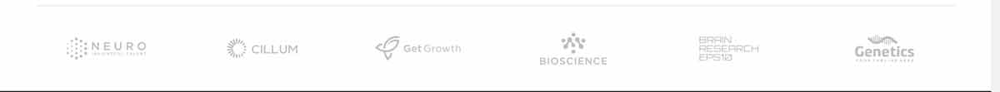
You can use this shortcode to display your clients in a gallery or a slider layout.
General
- List Appearance - Choose between the 'gallery' and 'slider' list appearance styles.
- Number of Columns - Set the number of columns you wish to display.
- Space Between Items - Set a predefined size for the space between items.
- Columns Responsive - Choose between 'predefined' columns responsive settings, or set the column responsiveness manually for each responsive stage.
- Enable Slider Loop - Set this option to "Yes" if you would like the carousell to loop back to the first slide after it shows the last slide.
- Enable Slider Autoplay - Set this option to "Yes" if you would like the carousel to automatically change slides.
- Slide Duration - Set how long (in milliseconds) a slide will stay on screen before switching to the next slide.
- Slide Animation Duration - Set a duration (in milliseconds) for the slide transition animation to last.
- Enable Slider Navigation - Set this option to "Yes" if you would like to display navigation arrows on the slider.
- Enable Slider Pagination - Set this option to "Yes" if you would like to enable pagination bullets on the slider.
Query
- Posts Per Page - Choose how many clientts you would like to display per page. Enter "-1" do display all clients on a single page.
- Order by - Choose how you would like to order your client items.
- Order - Choose between ascending and descending order.
-
Additional Params - Here you can choose which additional parameters you wish to define for clients featured in this client list.
- Post IDs - If you would only like to display certain items in your client list, enter the IDs of those posts in this field.
- Taxonomy - Here you can choose to feature clients from specific categories or with specific tags only.
- Taxonomy Slug - Input a taxonomy slug for the category/tag you wish to limit this client list to.
- Taxonomy IDs - Input taxonomy IDs for categories/tags you wish to limit this client list to.
Countdown
The countdown shortcode provides a great way to display a countdown timer on your page.
- Date - Input a date you wish to countdown to.
- Hour - Set an hour to countdown to.
- Minute - Set a minute to countdown to.
- Week Label - If you would like to change the "Week" label, input your desired text here.
- Week Label Plural - If you would like to change the "Week" label when the number displayed is larger than 1, input your desired text here.
- Day Label - If you would like to change the "Day" label, input your desired text here.
- Day Label Plural - If you would like to change the "Day" label when the number displayed is larger than 1, input your desired text here.
- Minute Label - If you would like to change the "Minute" label, input your desired text here.
- Minute Label Plural - If you would like to change the "Minute" label when the number displayed is larger than 1, input your desired text here.
- Second Label - If you would like to change the "Second" label, input your desired text here.
- Second Label Plural - If you would like to change the "Second" label when the number displayed is larger than 1, input your desired text here.
- Skin - Choose a skin for the countdown.
Counter
Counters are great for communicating information in the form of numbers.
Content
General
- Start Digit - Enter a digit to count from.
- End Digit - Enter a digit to count to.
- Step Between Digits - Set a step between digits.
- Step Delay - Set a delay for the step.
- Digit Label - Input a text label for digit.
- Title - Enter a title for the counter.
- Text - Enter some text for the counter.
Style
Digit Style
- Digit Font Size - Enter a font size for the digits.
- Digit Color - Set a color for the digits
Title Style
- Title Tag - Chose a heading tag for the counter title.
- Title Color - Set a color for the title.
- Title Margin Top - Set a top margin for the title.
Text Style
- Text Color - Set a color for the text.
- Text Margin Top - Set a top margin for the text.
Dropcaps
You can use this shortcode to easily create a textual section with drop caps.
Content
General
- Type - Choose a drop caps layout you wish to use.
- Letter - Input a letter you wish to stylize.
- Text - Add some accompanying text.
Style
Letter Style
- Letter Color - Set a color for the letter.
- Letter Background Color - Set a color for the letter background. This option is only available if you are using 'square' or 'circle' drop caps type.
Text Style
- Text Color - Set a color for the text.
Frame Slider
You can use this shortcode to create a slider inside an element styled as a mobile phone device frame.
- Link Target - Choose whether you would like the links to open in the same browser window, or a new browser window.
- Image - Upload the image you would like to display in this child element.
- Link - If you would like the image to be linked, you can input the link here.
You can add an image and a link for each child element or frame individually.
Google Map
You can use this shortcode to display a Google Map anywhere on the page.
- Address 1, 2, 3, 4 - Input the addresses to show on the map.
- Pin - Choose a pin (location marker) to be used on the map.
- Map Height - Set a height for the map.
Icon
Icons are great for communicating all sorts of information.
Content
General
- Icon - Choose an icon pack.
- Icon - Choose an icon.
- Size - Choose a predefined size for your icon.
- Custom Size - Enter a custom size for your icon.
- Layout - Choose an icon type you wish to use.
- Icon Custom Text - Input some text for the icon.
- Icon Link - Input a URL that you would like the icon to lead to when clicked.
- Link Target - Choose a target for the icon link.
Style
Custom Text Style
- Custom Text Size - Set a size for the custom text.
- Custom Text Font Weight - Set a font weight for the custom text.
Style
- Shape Size - Set a size for the icon shape when using the "Circle" or "Square" icon types.
- Icon Color - Set a color for the icon.
- Icon Hover Color - Set a hover color for the icon.
- Border Width - Set a width for the border.
- Border Color - Enter a color for the border when using the "Circle" or "Square" icon types.
- Border Hover Color - Set a hover color for the border when using the "Circle" or "Square" icon types.
- Background Color - Set a background color when using the "Circle" or "Square" icon types.
- Background Hover Color - Set a hover color for the background when using the "Circle" or "Square" icon types.
- Vertical Offset - Adjust the vertical offset.
- Margin - Enter a margin for the icon in a top, right, bottom, left format (ex.: "10px 20px 10px 20px").
Icon List Item
Icon List Items allow you to make lists using icons, rather than numbers or bullets.
Content
General
- Item Margin Bottom - Set a bottom margin for the icon list item element.
- Link - Input a link you wish this item to lead to.
- Link Target - Set a target for the link.
- Title - Input a title you wish to display.
Icon
- Icon Type - Choose an icon pack.
-
- Custom Icon - Set a custom icon here. This option is only available if you have selected the 'custom icon' icon source type.
- Icon - Choose an icon pack.
- Icon Pack - Choose an icon.
- Size - Set a size for the icon.
- Custom Size - Set a custom size for the icon.
- Layout - Choose an icon type you wish to use.
- Icon Custom Text - Input some custom text.
Style
Icon Custom Text Style
- Custom Text Size - Set a size for the custom text.
- Custom Text Font Weight - Set a font weight for the custom text.
Icon Style
- Shape Size - Set a size for the icon shape when using the "Circle" or "Square" icon types.
- Icon Color - Set a color for the icon.
- Icon Hover Color - Set a hover color for the icon.
- Border Width - Set a width for the border.
- Border Color - Set a color for the border.
- Border Hover Color - Set a hover color for the border.
- Background Color - Set a color for the background.
- Background Hover Color - Set a hover color for the background.
- Vertical Offset - Adjust the vertical offset for the icon.
Title Style
- Title Tag - Set a heading tag for the title text.
- Title Color - Set a color for the title.
Icon With Text
This shortcode allows you to easily add icons with text to your page.
Content
General
- Layout - Choose a type of Icon with Text to use.
- Link - Enter a link.
- Link Target - Set a target for the link.
- Title - Input a title.
- Text - Input some text.
- Content Alignment - Set an alignment for the top icon with text layout.
Icon
- Icon Type - Choose a type for your icon (This option won't take effect when Icon Layout is set to "Top". In This case Icon Type is "Normal").
- Size - Choose a predefined size for your icon.
- Custom Size - Set a custom size for the icon.
- Layout - Choose an icon type you wish to use.
- Icon Custom Text - Input some custom text for the icon.
Style
Icon Custom Text Style
- Custom Text Size - Set a size for the custom text.
- Custom Text Font Weight - Set a font weight for the custom text.
Icon Style
- Shape Size - Set a size for the icon shape when using the "Circle" or "Square" icon types.
- Icon Color - Set a color for the icon.
- Icon Hover Color - Set a hover color for the icon.
- Border Width - Set a width for the border.
- Border Color - Set a color for the border.
- Border Hover Color - Set a hover color for the border.
- Background Color - Set a color for the background.
- Background Hover Color - Set a hover color for the background.
- Vertical Offset - Adjust the vertical offset for the icon.
Title Style
- Title Tag - Set a heading tag for the title text.
- Title Color - Set a color for the title.
- Title Margin Top - Set a top margin for the title.
Text Style
- Text Tag - Set a heading tag for the title text.
- Text Margin Top - Set a top margin for the text.
Image Gallery
You can use the Image Gallery to display a grid or slider gallery of your images.
General
- Images - Upload the images for your gallery.
- Image Size - Enter an image size. You can either use one of the predefined sizes (thumbnail, medium, large, full), or enter a custom size in pixels (e.g. 200x300).
- Enable Image Shadow - Set this option to "Yes" to enable a shadow effect on the images.
-
Image Action - Choose how you would like the image to behave when clicked on.
- Custom Link Target - Choose whether you would like the links to open in the same browser tab or in a new browser tab.
Gallery Settings
-
List Appearance - Choose a layout for the image gallery.
- Image Proportions - Set the image proportions for the image gallery. This option is only available if you have selected the 'masonry' list appearance type.
- Number of Columns - Choose a number of columns (when using the "Image Grid" gallery type).
- Space Between Items - Choose a predefined spacing between gallery items.
- Columns Responsive - Choose between 'predefined' columns responsive settings, or set the column responsiveness manually for each responsive stage.
- Enable Slider Loop - Set this option to "Yes" if you would like the slider to loop back to the first slide after displaying the last slide. This option is only available if you have selected the 'slider' list appearance type.
- Enable Slider Autoplay - Set this option to "Yes" if you would like the slider to automatically change slides. This option is only available if you have selected the 'slider' list appearance type.
- Slide Duration - Set a duration time (in milliseconds) for each slide to stay on screen before switching to the next slide. This option is only available if you have selected the 'slider' list appearance type.
- Slide Animation Duration - Set a duration time (in milliseconds) for the animation between slides. This option is only available if you have selected the 'slider' list appearance type.
- Enable Slider Navigation - Set this option to "Yes" if you would like to show navigation arrows on the slider. This option is only available if you have selected the 'slider' list appearance type.
- Enable Slider Pagination - Set this option to "Yes" if you would like to show pagination on the slider. This option is only available if you have selected the 'slider' list appearance type.
Image with Text
You can use this shortcode to create an image with some accompanying text.
Content
General
- Image - Upload the image you would like to use.
- Image Size - Enter an image size. You can either use one of the predefined sizes (thumbnail, medium, large, full), or enter a custom size in pixels (e.g. 200x300).
-
Image Action - Choose how you would like the image to behave when clicked on.
- Scrolling Image Type - Choose a type of scrolling image you wish to use.
- Scrolling Direction - Choose a direction for scrolling.
- Hover Image - Set an image you wish to display on hover.
- Link - Input a link you wish the image to lead to.
- Title - Input a title.
- Text - Input the text you would like to display alongside the image.
Style
Title Style
- Title Tag - Choose a heading tag for the title.
- Title Color - Set a color for the title.
- Title Margin Top - Set a top margin for the title.
Text Style
- Text Color - Set a color for the text.
- Text Margin Top - Set a top margin for the text.
Pricing Table
Pricing Tables are a great way to present your business' pricing packages.
General
- Featured Table - Set this option to "Yes" to mark this table as featured.
- Background Color - Set a background color.
- Title - Enter a title for the pricing table.
- Title Color - Set a color for the title.
-
Price - Enter a price.
- Price Color - Set a color for the price.
-
Currency - Enter your desired currency sign.
- Currency Color - Set a color for the currency sign.
- Content - Here you can enter content into your pricing table.
Button
- Layout - Choose a layout type for the banner button.
- Size - Choose a size for the button.
- Button Text - Input a text you wish to display on the button.
- Button Link - Input a link you wish the button to lead to.
- Target - Set a target for the link.
- Text Color - Set a color for the text.
- Text Hover Color - Set a color for the text.
- Background Color - Set a background color for the button.
- Background Hover Color - Set a background color for the button on hover.
- Border Color - Set a color for the button border.
- Border Hover Color - Set a color for the button border on hover.
- Margin - Adjust the button margins.
- Padding - Adjust the button padding.
- Font Size - Set the font size for the button text.
- Font Weight - Set the font weight for the button text.
- Text Transform - Set a text transform style for the button text.
Progress Bar
The Progress Bar element is great for communicating a large amount of information in a visual and easy to understand manner.
Content
General
-
Layout - Chose a progress bar layout you wish to use.
- Custom Shape (SVG code) - Input a svg path for the custom shape. This option is only available for the 'custom' progress bar layout.
- Percentage Type - Choose how you wish to display percentage. This option is only available for the Line progress bar layout.
- Animation Duration - Input a value for the animation duration.
- Percentage Number - Enter a percentage to display on the progress bar.
- Title - Enter a title for the progress bar.
Style
Line Style
- Active Line Color - Set a color for the active part of the progress bar.
- Active Line Width - Adjust the width for the active part of the progress bar.
- Inactive Color - Set a color for the inactive part of the progress bar.
- Inactive Line Width - Adjust the width for the inactive part of the progress bar.
Number Style
- Number Color - Set a color for the digit.
Title Style
- Title Tag - Choose a heading tag for the title.
- Title Color - Set a color for the title text.
- Title Margin - Set a margin for the title.
Section Title
You can use this shortcode to add a title to any section.
Content
General
- Title - Input your title.
- Title Custom Link - If you wish to add a link of your choosing to the title, you can do so here.
- Text - Input some text.
- Content Alignment - Choose how you wish to align the content.
Style
Title Style
- Position of Line Break - Enter the position of the word after which you would like to create a line break (e.g. if you would like the line break after the 3rd word, you would enter "3").
- Positions of Outlined Word - Enter the position of the word(s) which you would like to display outlined (e.g. if you would like to outline the 3rd word, you would enter "3").
- Disable Line Break for Smaller Screens - Set this option to "Yes" if you would like to disable the line break postiion option on screens smaller than 1024px..
- Title Tag - Choose a heading tag for the title.
- Title Color - Set a color for the title.
- Title Font Size - Set a font size for the title.
- Title Line Height - Set a line height for the title.
Text Style
- Text Color - Set a color for the text.
- Text Font Size - Set a font size for the text.
- Text Margin Top - Set a top margin for the text.
Separator
Use the separator shortcode to create a visual divider between elements and sections on your pages.
Content
General
- Custom CSS Class - If you wish to style a particular content element differently, you can use this field to add an extra class name to that element and then refer to that class name in your css file.
- Position - Choose a position for the separator.
- Disable Below - Choose a resolution below which you wish to hide the separator.
Style
- Color - Set a color for the separator.
- Border Style - Chose a border style for the separator.
- Width - Set a width for the separator.
- Thickness - Set a thickness for the separator.
- Margin Top - Set a top margin for the separator.
- Margin Bottom - Set a bottom margin for the separator.
Social Share
You can use this shortcode to add social share icons to pages.
- Layout - Choose a type of social share.
- Dropdown Hover Behavior - Choose the manner in wich the dropdown will open. This option is only available if you have picked the dropdown social share type.
- Icons Font - Choose a font for your icons.
- Social Share Title - Input a title for the social share element. In case you leave this field empty, social icons will be displayed instead.
Tabs
Tabs allow you to organize your content and display only what is necessary at a particular moment.
- Orientation - Set an orientation for the tabs.
After you have added the Tabs shortcode to your page, you can start adding individual tabs by adding the Tabs Child shortcode and changing the following settings for each tab:
- Title - Set a title for this tab.
Now you can add content to the tab. You can insert any shortcode inside the tab.
Team List
This shortcode alows you to easily create a list of your team members.
General
- List Appearance - Choose a template for your team list. The template you choose will define how your team list will display.
-
Image Proportions - Choose the proportions of the images in your team list.
- Custom Image Width - Input a value for the custom image width in pixels. This option is only available if you have selected the Custom image proportion option.
- Custom Image Height - Input a value for the custom image height in pixels. This option is only available if you have selected the Custom image proportion option.
- Number of Columns - Set the number of columns in which you would like to display your team list.
- Space Between Items - Choose a spacing between team items in the list.
- Columns Responsive - Choose between 'predefined' columns responsive settings, or set the column responsiveness manually for each responsive stage.
- Enable Slider Loop - If you would like the slider to loop when it comes to the end of the team list, set this option to "Yes". This option is only available if you have selected the 'slider' list appearance.
- Enable Slider Autoplay - Set this option to "Yes" if you would like the slider to automatically change slides.
- Slide Duration - Set a duration time (in milliseconds) for each slide to stay on screen before switching to the next slide.
- Slide Animation Duration - Set a duration time (in milliseconds) for the animation between slides.
- Enable Slider Navigation - Set this option to "Yes" to enable slider navigation arrows.
- Enable Slider Pagination - Set this option to "Yes" to enable pagination bullets on the slider.
Query
- Posts Per Page - Choose how many team members you would like to display per page. Enter "-1" do display all items on a single page.
- Order by - Choose how you would like to order your team members.
- Order - Choose between ascending and descending order.
-
Additional Params - Here you can choose which additional parameters you wish to define for items featured in this team list.
- Post IDs - If you would only like to display certain team members in your team list, enter the IDs of those team members in this field.
- Taxonomy - Here you can choose to feature team members from specific categories or with specific tags only.
- Taxonomy Slug - Input a taxonomy slug for the category/tag you wish to limit this team list to.
- Taxonomy IDs - Input taxonomy IDs for categories/tags you wish to limit this team list to.
Layout
- Item Layout - Choose a style (layout and hover type) for the items in your blog list.
- Title Tag - Choose a heading tag for the titles in your blog list.
- Title Text Transform - Choose a text transform style for the title.
- Content Top Margin - Input the value for the content top margin size. This option is only available for 'info below' team list layout.
Additional
-
Enable Filter - Set this option to "Yes" to enable a category filter above the team list.
-
Pagination - Choose a pagination type to use.
- Load More Top Margin - Set a top margin for the "Load More" button when using the "Load More" type of pagination.
Product List
You can use this shortcode to display a list of your shop products.
General
- Custom Class - If you wish to style a particular content element differently, you can use this field to add an extra class name to that element and then refer to that class name in your css file.
- List Appearance - Choose a template for your product list. The template you choose will define how your product list will display.
-
Image Proportions - Choose the proportions of the images in your product list.
- Custom Image Width - Input a value for the custom image width in pixels. This option is only available if you have selected the Custom image proportion option.
- Custom Image Height - Input a value for the custom image height in pixels. This option is only available if you have selected the Custom image proportion option.
- Number of Columns - Set the number of columns in which you would like to display your product list.
- Space Between Items - Choose a spacing between product items in the list.
- Row Height - Input a value for the row height. This option is only available if you have selected the 'justified gallery' list appearance.
- Max Row Height - Input a value for the max row height. This option is only available if you have selected the 'justified gallery' list appearance.
- Last Row Threshold - Input a value for the last row threshold. This option is only available if you have selected the 'justified gallery' list appearance.
- Columns Responsive - Choose between 'predefined' columns responsive settings, or set the column responsiveness manually for each responsive stage.
- Enable Slider Loop - If you would like the slider to loop when it comes to the end of the product list, set this option to "Yes". This option is only available if you have selected the 'slider' list appearance.
- Enable Slider Autoplay - Set this option to "Yes" if you would like the slider to automatically change slides.
- Slide Duration - Set a duration time (in milliseconds) for each slide to stay on screen before switching to the next slide.
- Slide Animation Duration - Set a duration time (in milliseconds) for the animation between slides.
- Enable Slider Navigation - Set this option to "Yes" to enable slider navigation arrows.
- Enable Slider Pagination - Set this option to "Yes" to enable pagination bullets on the slider.
Query
- Posts Per Page - Choose how many products you would like to display per page. Enter "-1" do display all products on a single page.
- Order by - Choose how you would like to order your product items.
- Order - Choose between ascending and descending order.
-
Additional Params - Here you can choose which additional parameters you wish to define for products featured in this product list.
- Post IDs - If you would only like to display certain projects in your product list, enter the IDs of those projects in this field.
- Taxonomy - Here you can choose to feature products from specific categories or with specific tags only.
- Taxonomy Slug - Input a taxonomy slug for the category/tag you wish to limit this product list to.
- Taxonomy IDs - Input taxonomy IDs for categories/tags you wish to limit this product list to.
Layout
- Item Layout - Choose a style (layout and hover type) for the items in your product list.
- Title Tag - Choose a heading tag for the titles in your product list.
- Title Text Transform - Choose a text transform style for the title.
Additional
- Enable Filter - Set this option to "Yes" to enable a category filter above the product list.
-
Pagination - Choose a pagination type to use.
- Load More Top Margin - Set a top margin for the "Load More" button when using the "Load More" type of pagination.
Product Category List
You can use this shortcode to display a list of your products belonging to a specific category.
- Custom Class - If you wish to style a particular content element differently, you can use this field to add an extra class name to that element and then refer to that class name in your css file.
- List Appearance - Choose a template for your product list. The template you choose will define how your product list will display.
-
Image Proportions - Choose the proportions of the images in your product list.
- Custom Image Width - Input a value for the custom image width in pixels. This option is only available if you have selected the Custom image proportion option.
- Custom Image Height - Input a value for the custom image height in pixels. This option is only available if you have selected the Custom image proportion option.
- Number of Columns - Set the number of columns in which you would like to display your product list.
- Space Between Items - Choose a spacing between product items in the list.
- Columns Responsive - Choose between 'predefined' columns responsive settings, or set the column responsiveness manually for each responsive stage.
- Enable Slider Loop - If you would like the slider to loop when it comes to the end of the product list, set this option to "Yes". This option is only available if you have selected the 'slider' list appearance.
- Enable Slider Autoplay - Set this option to "Yes" if you would like the slider to automatically change slides.
- Slide Duration - Set a duration time (in milliseconds) for each slide to stay on screen before switching to the next slide.
- Slide Animation Duration - Set a duration time (in milliseconds) for the animation between slides.
- Enable Slider Navigation - Set this option to "Yes" to enable slider navigation arrows.
- Enable Slider Pagination - Set this option to "Yes" to enable pagination bullets on the slider.
Query
- Posts Per Page - Choose how many products you would like to display per page. Enter "-1" do display all products on a single page.
- Order by - Choose how you would like to order your product items.
- Order - Choose between ascending and descending order.
-
Additional Params - Here you can choose to display products belonging to a designated category or categories of your choosing.
- Category Slug - Input the category slug for the category you wish to display. In case you are including more than one product category in your list, please delimit the slugs by a comma.
Layout
- Title Tag - Choose a heading tag for the titles in your product list.
- Title Text Transform - Choose a text transform style for the title.
Custom Font
You can use this shortcode to create a textual section using a custom font.
Content
General
- Title Text - Input a title.
Style
- Title Tag - Choose a heading tag for the text.
- Positions of Outlined Word - Enter the position of the word(s) which you would like to display outlined (e.g. if you would like to outline the 3rd word, you would enter "3").
- Color - Set a color for the text.
- Font Family - Input the name of the font family you would like to use.
- Font Size - Set a font size for the text.
- Line Height - Set a line height for the text.
- Letter Spacing - Input a letter spacing for the text.
- Font Weight - Choose a font weight for the text.
- Font Style - Choose a font style for the text.
- Text Transform - Choose a text transform style.
- Margin - Set margin values for the custom font text. Please input the margin in a "top right bottom left" format (e.g. 5px 10px 5px 10px).
In the remaining tabs, you can set a font size, line height, and letter spacing for each responsive breakpoint.
Working Hours List
You can use this shortcode to display your business's working hours. To set up your working hours, please navigate to Marity Core Options -> Working Hours.
Interactive Links Showcase
This shortcode provides a great way to create eye-catching full screen showcases with multiple links and images.
- Layout - Choose a layout for the showcase you wish to use.
- Link Skin - Set the skin you wish to use.
- Background Color - Set the color for the background.
- Link Target - Set the target for the link.
- Child elements - You can add individual link items here. For each item you can input a title, a link and the image you wish to display.
Highlight
You can use this shortcode to create a highlighted textual section.
Content
General
- Text - Input a text you wish to display.
- Link - If you wish to link the highlighted text, input the URL you wish to link the section to here.
- Link Target - Choose whether the link will open in a new or the same browser tab.
Style
Text Style
- Text Tag - Set a heading tag for the text.
- Text Color - Set a color for the text.
- Positions of Line Break - Enter the position of the word after which you would like to create a line break (e.g. if you would like the line break after the 3rd word, you would enter "3").
- Disable Line Break for Smaller Screens - Set this option to "Yes" if you would like to disable the line break postiion option on screens smaller than 1024px.
- Highlight Text Position - Enter the positions of the words you would like to display as 'highlighted' text. Separate start and end word positions with commas (e.g. if you would like to wrap from the fifth to the ninth word, you would enter "5,9"). If you want to highlight the whole text, input -1 here.
- Highlight Text Color - Set a color for the text.
- Highlight Text Background Color - Set a background color for the text.
Item Showcase
You can use this shortcode to showcase an image and place informative text around it.
- Image - Upload the image you would like to showcase.
- Image Top Offset - Input a top offset for the image.
After you have set the image, you can start adding Item Showcase child elements, and setting the following options for each one:
- Title - Input a title for the item.
- Title Tag - Choose a heading tag for the title.
- Title Color - Set a color for the title.
- Text - Input text for the item.
- Text Color - Set a color for the text.
- Text Margin Top - Set a top margin for the text.
- Link - If you would like the title to be linked to some other page, input the link here.
-
- Link - If you would like to link the item to some other page, input the link here.
- Link Target - Choose whether the link will open in a new or the same browser tab.
Info Section
You can use this shortcode to create an informative section containing a title, some text, background text and a button.
General
- Title - Input a title for the info section.
- Title Tag - Set a heading tag for the title.
- Positions of Line Break - Enter the position of the word after which you would like to create a line break (e.g. if you would like the line break after the 3rd word, you would enter "3").
- Disable Line Break for Smaller Screens - Set this option to "Yes" if you would like to disable the line break postiion option on screens smaller than 1024px.
- Title Color - Set a color for the title.
- Text - Input text you wish to display.
- Text Color - Set a color for the text.
Button
- Layout - Choose a layout type for the banner button.
- Size - Choose a size for the button.
- Button Text - Input a text you wish to display on the button.
- Button Link - Input a link you wish the button to lead to.
- Target - Set a target for the link.
- Text Color - Set a color for the text.
- Text Hover Color - Set a color for the text.
- Background Color - Set a background color for the button.
- Background Hover Color - Set a background color for the button on hover.
- Border Color - Set a color for the button border.
- Border Hover Color - Set a color for the button border on hover.
- Margin - Adjust the button margins.
- Padding - Adjust the button padding.
- Font Size - Set the font size for the button text.
- Font Weight - Set the font weight for the button text.
- Text Transform - Set a text transform style for the button text.
Background Text
- Background Text - Input text you wish to display in the info section background.
- Background Text Position - Choose how the background text will be positioned inside the info section.
- Background Text Color - Set a color for the background text.
Instagram List
You can use this shortcode to display a list of your instagram photos.
- Number of Photos - Input the number of photos you would like to display.
- Number of Columns - Choose a number of columns to display the photos in.
- Padding Around Images - Choose a value for the padding around images in the list.
- Image Resolution - Set the resolutions for images in the list.
Charts
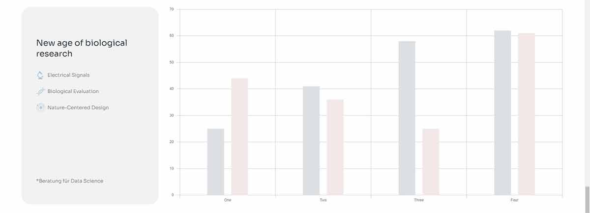
You can use this shortcode to display your data in line, vertical/horizontal bar, radar, pie, or donut charts.
General
- Type - Choose a type of the chart you'd like to display.
- Line Tension - Choose a line tension style. This option is only available for the Line chart type.
- Fill Shape - Set this option to "Yes" to enable a shape fill for the line. This option is only available for the Line chart type.
- Show Glossy Box - Set this option to "Yes" if you wish to display a glossy box for the chart. This option is only available for the Doughnut chart type.
-
- Full Size Glossy Box - Set this option to "Yes" if you wish to make the glossy box fill size.
- Horizontal Alignment - Choose a horizontal alignment type for the chart.
- Vertical Alignment - Choose a vertical alignment type for the chart.
- Color Scheme - Pick a color scheme for the chart. This option is only available for the Line and Doughnut chart types.
- Skin - Choose a skin type for the element.
- Hide xAxes - Set this option to "Yes" to prevent the x chart axis from being displayed.
- Hide yAxes - Set this option to "Yes" to prevent the y chart axis from being displayed.
- Hide Legend - Set this option to "Yes" to prevent the chart legend from being displayed.
- Legend Position - Choose a position for the chart legend.
Points
- Use Point Group 1, 2, 3, 4, 5, 6, 7, 8, 9, 10, 11, 12 - Set which point groups you wish to display in the chart.
Dataset 1, 2, 3
- Dataset Label - Input a label for the dataset.
- Dataset Color - Set a color for the dataset.
Masonry Gallery List
You can use this shortcode to display a masonry-style gallery for your items.
General
- Custom CSS Class - If you wish to style a particular content element differently, you can use this field to add an extra class name to that element and then refer to that class name in your css file.
- List Appearance - Choose a template for your masonry gallery list. The template you choose will define how your team list will display.
-
Image Proportions - Choose the proportions of the images in your portfolio list.
- Custom Image Width - Input a value for the custom image width in pixels. This option is only available if you have selected the Custom image proportion option.
- Custom Image Height - Input a value for the custom image height in pixels. This option is only available if you have selected the Custom image proportion option.
- Number of Columns - Choose a number of columns (when using the "Image Grid" gallery type).
- Columns Responsive - Choose between 'predefined' columns responsive settings, or set the column responsiveness manually for each responsive stage.
- Space Between Items - Choose a predefined spacing between gallery items.
- Enable Parallax Item - Set this option to "Yes" if you would like to apply the parallax effect to items. This option is only available if you have selected the 'masonry' list appearance.
Query
- Posts Per Page - Choose how many items you would like to display per page. Enter "-1" to display all items on a single page.
- Order by - Choose how you would like to order your masonry gallery items.
- Order - Choose between ascending and descending order.
-
Additional Params - Here you can choose which additional parameters you wish to define for items featured in this masonry gallery list.
- Post IDs - If you would only like to display certain items in your masonry gallery list, enter the IDs of those items in this field.
- Taxonomy Slug - Input a taxonomy slug for the category/tag you wish to limit this masonry gallery list to.
- Author Name - Input the name of the author whose items you wish to limit this masonry gallery list to.
Magnifier Glass
You can use this shortcode to display a section that contains two images; the larger image, displayed in the background, and the smaller image which is shown over the main image inside a circular frame styled to resemble a magnifying glass. A zoomed in portion of the bigger image gets displayed inside this round element and moves along as you scroll.
General
- Stage Image - Set an image that will be displayed in the background with a blur effect.
- Lens Image - Set an image that will represent a zoomed in portion of the stage image.
Top Content
- Title - Input a title you wish to display in the top element section.
- Positions of Line Break - Enter the position of the word after which you would like to create a line break (e.g. if you would like the line break after the 3rd word, you would enter "3").
- Disable Title Line Break - Set this option to "Yes" if you would like to disable the line break postiion option on screens smaller than 1024px.
- Highlight Title Position - Enter the position(s) of the word(s) which you would like to highlight (e.g. if you would like to highlight the 3rd word in the title, you would enter "3").
- Highlight Blur - Set this option to "Yes" to add a blur effect to highlighted words.
- Remove Blur on Init - Set this option to "Yes" to display the blur effect on the word(s) only for a brief moment and remove the effect afterwards.
- Highlight Title Color - Set a color for the highlighted words in the title.
- Highlight Title Background Color - Set a color for the background of the highlighted words in the title.
- Text - Add some text that will be displayed beneath the title.
Bottom Content
- Title - Add a title that will be displayed in the bottom portion of the element.
- Button Text - Add a text that will be shown on the button.
- Button Link - Add a URL for the button link.
- Button Link Target - Choose how the link opens.
- Text - Input some additional text to be shown in the bottom section.
Process Info Tabs
You can use this shortcode to create informative tabs which you can easily style.
- Layout - Pick a layout you wish to use for the element.
- Skin - Pick a skin for the element. This option is only available for the horizontal and periodic tabs element layouts.
-
Behavior - Choose between default and indent slider behavior types.
- Slides Per View - Choose how many slides you wish to show.
- Enable Slider Loop - If you would like the slider to loop when it comes to the end of the list, set this option to "Yes".
- Enable Slider Autoplay - Set this option to "Yes" if you would like the slider to automatically change slides.
- Slide Duration - Set a duration time (in milliseconds) for each slide to stay on screen before switching to the next slide.
- Slide Animation Duration - Set a duration time (in milliseconds) for the animation between slides.
- Show Drag Cursor - Set this option to "Yes" if you wish to enable cursor dragging for the slider.
- Enable Slider Navigation - Set this option to "Yes" to enable slider navigation arrows.
- Enable Slider Pagination - Set this option to "Yes" to enable pagination bullets on the slider.
- Count Elements - Set this option to "Yes" if you wish to display element count.
- Appearance - Choose an appearance style for the element.
- Hide Borders - Set this option to Yes" if you wish to omit the borders. This option is only available if you selected the glossy appearance type.
- Show Morph Shape - Set this option to Yes" if you wish to display the morph shape.
- Enable Min Height - Set this option to "Yes" to limit the height of the element on smaller screens. This option is only avaialbe for the horizontal element layout.
- Number of Columns - Input how many columns you wish to display in the element.
- Columns Responsive - Choose between 'predefined' columns responsive settings, or set the column responsiveness manually for each responsive stage.
- Space Between Items - Choose a spacing between items.
- Appear Animation - Enable a content entry animation for the element.
- Appear Animation Delay - Set this option to "Yes" if you wish to delay the appear animation.
- Process Items Supertitle Tag - Set a heading tag for the supertitle text for items.
- Process Items Title Tag - Set a heading tag for the title text for items.
- Process Items - Here you can add individual items you wish to display. For each of the items you can set box color, box border color, choose a morph shape, set a morph color, input supertitle and title text, add some additional textual content, input button text, button link, choose how the link opens, and add an overlay link and set its target.
9. Testimonials
In this section of the User Guide we will discuss how to create and how to add them to your website pages.
Testimonials are a great way to show potential clients what others are saying about your business.
To create a testimonial, navigate to Testimonials > Add New from your WordPress admin panel and enter a title for your testimonial in the text field near the top of the screen.
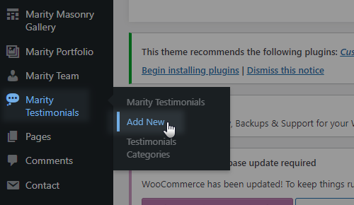
Marity Testimonials
Fill in the following fields to complete your testimonial:
- Title – Set a title for your testimonial.
- Text – Enter the testimonial text.
- Author – Enter the name of the testimonial’s author.
- Author Job Title - Enter the testimonial author's job position.
You can now assign your testimonial to a category. On the right side of the screen you will see a section named Testimonial Categories. Here you can select the category that you wish to add this testimonial to. If you would like to add a new category, click on the + Add New Testimonials Category link, and a text field will appear in which you can enter a name for your new category. Then click on Add New Testimonials Category.
After you have selected the categories you want to add this testimonial to, click the Publish button.
Finally, in order to display your testimonials on a page, go to that page from the backend and click the Add Elements button, and from the elements menu select Testimonials List.
You can now edit how your testimonials display on the page by adjusting the following options:
General
- Custom Class - If you wish to style a particular content element differently, you can use this field to add an extra class name to that element and then refer to that class name in your css file.
- List Appearance - Choose a template for your testimonial list. The template you choose will define how your testimonial list will display.
- Number of Columns - Set the number of columns in which you would like to display your testimonial list.
- Space Between Items - Choose a spacing between testimonial items in the list.
- Columns Responsive - Choose between 'predefined' columns responsive settings, or set the column responsiveness manually for each responsive stage.
- Enable Slider Loop - If you would like the slider to loop when it comes to the end of the testimonial list, set this option to "Yes". This option is only available if you have selected the 'slider' list appearance.
- Enable Slider Autoplay - Set this option to "Yes" if you would like the slider to automatically change slides.
- Slide Duration - Set a duration time (in milliseconds) for each slide to stay on screen before switching to the next slide.
- Slide Animation Duration - Set a duration time (in milliseconds) for the animation between slides.
- Enable Slider Navigation - Set this option to "Yes" to enable slider navigation arrows.
- Enable Slider Pagination - Set this option to "Yes" to enable pagination bullets on the slider.
- Skin - Choose a testimonial skin you wish to use.
Query
- Posts Per Page - Choose how many posts you would like to display per page. Enter "-1" do display all posts on a single page.
- Order by - Choose how you would like to order your testimonial items.
- Order - Choose between ascending and descending order.
-
Additional Params - Here you can choose which additional parameters you wish to define for posts featured in this testimonial list.
- Post IDs - If you would only like to display certain posts in your testimonial list, enter the IDs of those posts in this field.
- Taxonomy Slug - Input a taxonomy slug for the category/tag you wish to limit this testinomial list to.
- Taxonomy IDs - Input taxonomy IDs for categories/tags you wish to limit this testimonial list to.
Layout
- Title Tag - Choose a heading tag for the titles in your testimonial list.
- Title Text Transform - Choose a text transform style for the title.
- Content Top Margin - Input the value for the content top margin size. This option is only available for 'info below' portfolio list layout.
10. Team
In this section of the User Guide we will discuss the creation of team items, as well as how to add team lists to your website pages.
Team Items
To create a new team item:
- Navigate to Team > Add new from your WordPress admin panel.
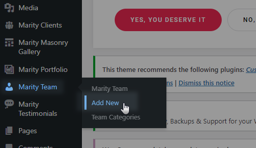
- Enter a title for your team item in the text field near the top of the page. This will usally be the name of the team member.
- On the right side of the screen you will see a section named Team Categories. Here you can select the categories that you would like to add this team item to. If you would like to create a new category, click on the + Add New Category link. A text field will appear in which you can enter a category name, and then click Add New Category.
- Once you have checked the categories you would like to add your team item to, click the Publish button.
Beneath the Team Categories section is the Featured Image section. In the Featured Image section, you can upload a picture of your team member.
Now that you have set up your first team item, let’s go over the available custom fields for team items.
Team Single
- General Settings - Here you can add the team member's role (position), as well as to add the team member's social networks.
Team List
A team list displays a listing of your team items (members), each of which can be clicked on for a detailed overview of the single team item.
A team list is added to pages via the Team List shortcode. To add a team list to a page, navigate to the backend of that page and add the Team List element to the page via Elementor Page Builder (by entering the Elementor Page Builder view, and then dragging the Team List element from the element selection screen). For a comprehensive overview of all the options provided in the Team List element, please see the Custom Shortcodes section of this User Guide.
11. Clients
In this section of the User Guide we will discuss the creation of client items, as well as how to add client lists to your website pages.
Client Items
To create a new client item:
- Navigate to Clients > Add new from your WordPress admin panel.
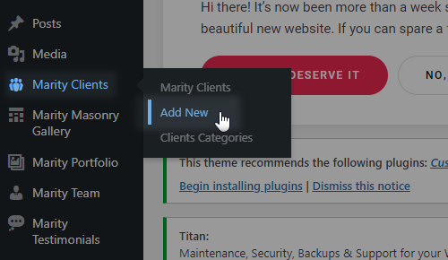
- Enter a title for your clients item in the text field near the top of the page. This will usally be the name of one of your business clients.
- On the right side of the screen you will see a section named Clients Categories. Here you can select the categories that you would like to add this clients item to. If you would like to create a new category, click on the + Add New Category link. A text field will appear in which you can enter a category name, and then click Add New Category.
- Once you have checked the categories you would like to add your clients item to, click the Publish button.
Beneath the Clients Categories section is the Featured Image section. In the Featured Image section, you can upload a picture displaying your client (e.g. their company logo).
Now that you have set up your first clients item, let’s go over the available custom fields for clients items.
Clients Parameters
- Client Logo Image - Upload a logo image for this client.
- Client Logo Hover Image - Uplaod a logo image for this client that appears on logo hover.
- Client Link - Input a link you wish this clients item to lead to.
- Client Link Target - Choose whether the link will open in the same or a new browser tab.
Clients List
A clients list displays a listing of your clients items, each of which can be clicked on for a detailed overview of the single clients item.
A clients list is added to pages via the Clients List shortcode. To add a clients list to a page, navigate to the backend of that page and add the Clients List element to the page via WPBakery Page Builder (by clicking on the Add Element button, and then choosing the Clients List element from the element selection screen). For a comprehensive overview of all the options provided in the Clients List element, please see the Custom Shortcodes section of this User Guide.
12. Masonry Gallery
In this section of the User Guide we will discuss the creation of masonry gallery items, as well as how to add masonry gallery lists to your website pages.
Masonry Gallery Items
To create a new masonry gallery item:
- Navigate to Marity Masonry Gallery > Add New from your WordPress admin pannel.
- Enter a title for your masonry gallery item in the text field near the top of the page.
- On the right side of the screen you will see a section named Categories. Here you can select the categories that you would like to add this item to. If you would like to create a new category, click on the + Add New Category link. A text field will appear in which you can enter a category name, and then click Add New Category.
- Once you have checked the categories you would like to add your clients item to, click the Publish button.
Beneath the Categories section is the Featured Image section. In the Featured Image section, you can upload a picture displaying your item.
Now that you have set up your first masonry gallery item, let’s go over the available custom fields for items.
Masonry Gallery Parameters
- Item Layout - Pick a layout for the gallery.
- Masonry Item Dimension - Choose the dimensions for the item.
- Title Tag - Set a heading tag for the item title. This option is only available for the 'standard' and 'textual' item layout styles.
- Link - Input a URL you wish to link the item to.
- Target - Choose whether the link will open in a new or the same browser window.
Masonry Gallery List
A masonry gallery list shortcode displays a listing of your masonry items, each of which can be clicked on for a detailed overview of the item.
A masonry gallery list is added to pages via the Masonry Gallery List shortcode. For a comprehensive overview of all the options provided in the Masonry Gallery List element, please see the Custom Shortcodes section of this User Guide.
13. Widgets
In this section of the User Guide we will discuss the available widgets and widget areas in the theme.
Widgets are easy to manage and can be incredibly useful to have on your site.
For Marity, we have developed custom widgets and widget areas in order to provide you with even more functionality. You also have the option of creating your own custom sidebars (custom widget areas).
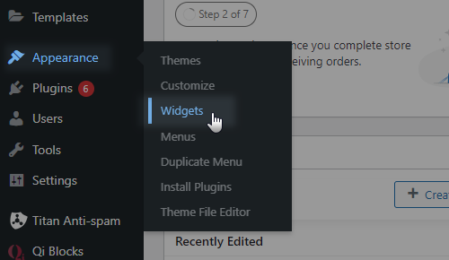
Widgets
- Marity Author Info Widget - Add author info element to widget areas.
- Marity Blog List - Use this widget to display a list of your blog posts in a widget area (for example in a sidebar).
- Marity Contact Form 7 Widget - Use this widget to add contact forms to your widget areas.
- Marity Contact Info - Use this widget to easily add contact info to your widget areas.
- Marity Custom Font Widget - Use this widget to add some stylized text to a widget area.
- Marity Icon Widget - Use this widget to easily add icons to widget areas.
- Marity Icon List Item Widget - Use this widget to easily add icon list items to widget areas.
- Marity Login Opener Widget - Use this widget to easily add login opener to widget areas.
- Marity Search Opener - Use this widget to place the search icon in a desired widget area.
- Marity Separator Widget - Use this widget to easily add a separator to a widget area.
- Marity Side Area Opener - Use this widget to place the icon that opens the side area in a desired widget area.
- Marity Social Icons Group Widget - Use this widget to easily add social icons to a widget area.
- Marity Social Share Widget - Use this widget to easily add social share icons to a widget area.
- Marity Working Hours List Widget - Use this widget to easily add working hours list to a widget area.
- Marity Twitter Widget - To enable the Marity Twitter Widget, you first need to go to Marity Options > Social > Twitter, and click the "Connect with Twitter" button. This will open your browser and ask for permission to your Twitter feed.
After you have enabled permission, you can set the options for the widget, such as a Title for the widget, the user ID of the user whose tweets you would like displayed ( https://mytwitterid.com/ ), the number of tweets to display, whether to show the time the tweet was tweeted, and you can also set a tweet cache time. If you leave the tweet cache time empty, then your tweets will not be stored in cache and each time the page is reloaded they will be requested from Twitter. The tweet cache time is defined in seconds (only a number should be entered without a time unit, i.e. if you enter 600 the cache time will be set to 600s). If you have any issues with the Twitter feed, you can go to Marity Options > Social > Twitter, and click "Reconnect to Twitter". - Marity Instagram Widget - You can use this widget to display your Instagram feed.
- Marity WooCommerce Dropdown Cart - You can use this widget to display a cart icon in a desired widget area which, when hovered over, will show a dropdown with a listing of the items in your cart.
- Marity WooCommerce Side Cart - You can use this widget to display a side cart in a desired widget area.
Widget Area
- Main Sidebar - This is the WordPress default sidebar widget area for blog posts.
- Header - Area One - You can use this widget area to add widgets to the header widget area one. This area is located to the upper left, and the order in which the widgets will be placed in the header widget area (this goes for Header Widget Area One and Two) is left-to-right and top-to-bottom, until the header widget area is filled.
- Header - Area Two - You can use this widget area to add widgets to the header widget area two. This area is located to the right of the Header Widget Area One).
- Sticky Header - Area One - You can use this widget area to add widgets to the sticky header.
- Header Top Area - Left - You can use this widget area to add widgets to the left side of the header top.
- Header Top Area - Right - You can use this widget area to add widgets to the right side of the header top.
- Mobile Header - You can use this widget area to add widgets to the mobile header.
- Side Area - You can use this widget area to add widgets to your side area.
- Footer Top Area 1, 2, 3 & 4 – You can use these widget areas to add widgets to the Footer Top columns.
- Footer Bottom Area 1 & 2 – You can use these widget areas to add widgets to the Footer Bottom columns.
- Custom Widget Area - Use this option to add a custom widget area to your site.
14. WooCommerce
In this section of the User Guide we will discuss how to install and set up the WooCommerce eCommerce plugin with Marity.
Marity comes with WooCommerce integration, which allows you to easily create an online shop. For more information on installing and configuring WooCommerce, please visit this page:
https://docs.woothemes.com/documentation/plugins/woocommerce/getting-started/
In order to set up WooCommerce with the Marity theme, follow these steps:
- Navigate to Plugins > Add New from your WordPress admin panel.
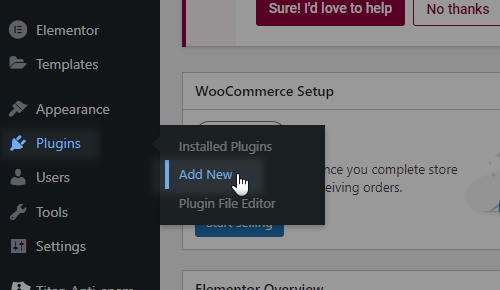
- Type “WooCommerce” in the search field.
- Locate "WooCommerce - excelling eCommerce" in the search results and click on Install Now.
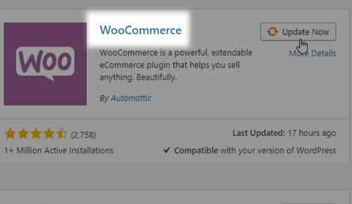
- Once the installation has completed, click on Activate Plugin.
- You will now see a notice saying “Welcome to WooCommerce – You're almost ready to start selling :)". If you plan on importing demo content, click on Skip Setup. Otherwise, click Install Pages.
- If you plan on importing demo content, you should first set the product image sizes in order to achieve the same look as on our demo sites. Navigate to Appearance > Customize and click on WooCommerce, and then the Product Images. There you will be able to set the main image width and the thumbnail image width. Please note that under the Thumbnail cropping section you should either select Uncropped or Custom aspect ratio. If you choose to crop the images to a Custom aspect ratio, please make sure that the images are set to identical dimensions for both the product list and the product single.
- See Importing Demo Content in the Getting Started section of this user guide and perform the process explained there.
- Create a page for your shop. Then navigate to WooCommerce > Settings > Products > Display and choose the page you create as your Shop Page (in the "Shop Page" field).
Creating Products
To create a new shop product, please navigate to Products > Add Product. Here you can set up all the standard WooCommerce options for each product, as well as some custom theme options:
Product List
- Product List Image - Upload an image to be displayed on product lists.
- Image Dimension - Here you can choose an image layout for product list. If you are using fixed image proportions on the list, choose an option other than default
- Show New Sign - Enable this option to see mark (Sold or Sale) on single product and on product lists
15. Contact Form 7
In this section of the User Guide we will discuss how to install the Contact Form 7 plugin and how to add contact forms to your pages.
- Navigate to Plugins > Add New from your WordPress admin panel.
- Type "Contact Form 7" in the search field.
- Locate "Contact Form 7" in the search results and click on Install Now.
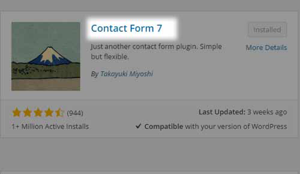
- Once installation is complete, click on Activate Plugin.
Now when you use Elementor Page Builder while creating your pages, you will see a new shortcode in the list of shortcodes – the Contact Form 7 shortcode.
Click on this shortcode to add a contact form to your page. There are several fields to fill in:
- Select Contact Form – Choose a previously created contact form from the drop down list.
- Search title – Enter text to use as the contact form title. Leave blank if no title is needed.
3rd Party Integration
If you wish to integrate a newsletter sending service, you need to additionally install a plugin called "Forms: 3rd-Party Integration." You can check out the link to their site here: https://wordpress.org/plugins/forms-3rdparty-integration/.
Once you've completed the installation process and activated this plugin, navigate to Contact > Integration from your WordPress admin panel in order to set the options. For more information on setting up this plugin, check out the following link: https://wordpress.org/plugins/forms-3rdparty-integration/screenshots/.